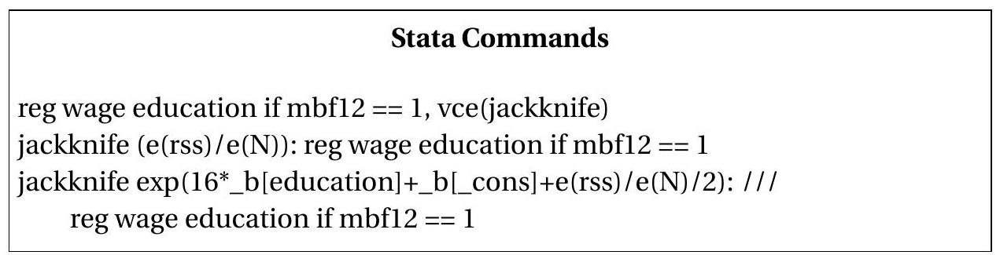
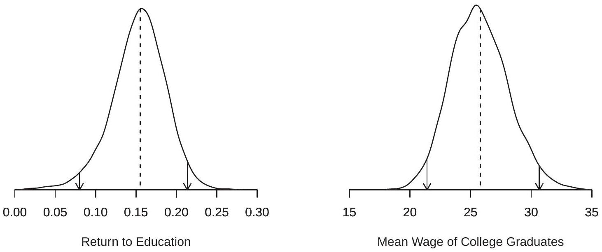
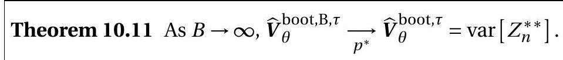
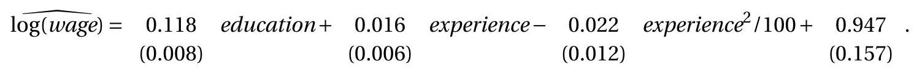

11 Resampling Methods
11.1 Introduction
So far in this textbook we have discussed two approaches to inference: exact and asymptotic. Both have their strengths and weaknesses. Exact theory provides a useful benchmark but is based on the unrealistic and stringent assumption of the homoskedastic normal regression model. Asymptotic theory provides a more flexible distribution theory but is an approximation with uncertain accuracy.
In this chapter we introduce a set of alternative inference methods which are based around the concept of resampling - which means using sampling information extracted from the empirical distribution of the data. These are powerful methods, widely applicable, and often more accurate than exact methods and asymptotic approximations. Two disadvantages, however, are (1) resampling methods typically require more computation power; and (2) the theory is considerably more challenging. A consequence of the computation requirement is that most empirical researchers use asymptotic approximations for routine calculations while resampling approximations are used for final reporting.
We will discuss two categories of resampling methods used in statistical and econometric practice: jackknife and bootstrap. Most of our attention will be given to the bootstrap as it is the most commonly used resampling method in econometric practice.
The jackknife is the distribution obtained from the \(n\) leave-one-out estimators (see Section 3.20). The jackknife is most commonly used for variance estimation.
The bootstrap is the distribution obtained by estimation on samples created by i.i.d. sampling with replacement from the dataset. (There are other variants of bootstrap sampling, including parametric sampling and residual sampling.) The bootstrap is commonly used for variance estimation, confidence interval construction, and hypothesis testing.
There is a third category of resampling methods known as sub-sampling which we will not cover in this textbook. Sub-sampling is the distribution obtained by estimation on sub-samples (sampling without replacement) of the dataset. Sub-sampling can be used for most of same purposes as the bootstrap. See the excellent monograph by Politis, Romano and Wolf (1999).
11.2 Example
To motivate our discussion we focus on the application presented in Section 3.7, which is a bivariate regression applied to the CPS subsample of married Black female wage earners with 12 years potential work experience and displayed in Table 3.1. The regression equation is
\[ \log (\text { wage })=\beta_{1} \text { education }+\beta_{2}+e . \]
The estimates as reported in (4.44) are
\[ \begin{aligned} & \log (\text { wage })=0.155 \text { education }+0.698+\widehat{e} \\ & \text { (0.031) } \quad(0.493) \\ & \widehat{\sigma}^{2}=0.144 \\ & \text { (0.043) } \\ & n=20 \text {. } \end{aligned} \]
We focus on four estimates constructed from this regression. The first two are the coefficient estimates \(\widehat{\beta}_{1}\) and \(\widehat{\beta}_{2}\). The third is the variance estimate \(\widehat{\sigma}^{2}\). The fourth is an estimate of the expected level of wages for an individual with 16 years of education (a college graduate), which turns out to be a nonlinear function of the parameters. Under the simplifying assumption that the error \(e\) is independent of the level of education and normally distributed we find that the expected level of wages is
\[ \begin{aligned} \mu &=\mathbb{E}[\text { wage } \mid \text { education }=16] \\ &=\mathbb{E}\left[\exp \left(16 \beta_{1}+\beta_{2}+e\right)\right] \\ &=\exp \left(16 \beta_{1}+\beta_{2}\right) \mathbb{E}[\exp (e)] \\ &=\exp \left(16 \beta_{1}+\beta_{2}+\sigma^{2} / 2\right) . \end{aligned} \]
The final equality is \(\mathbb{E}[\exp (e)]=\exp \left(\sigma^{2} / 2\right)\) which can be obtained from the normal moment generating function. The parameter \(\mu\) is a nonlinear function of the coefficients. The natural estimator of \(\mu\) replaces the unknowns by the point estimators. Thus
\[ \widehat{\mu}=\exp \left(16 \widehat{\beta}_{1}+\widehat{\beta}_{2}+\widehat{\sigma}^{2} / 2\right)=25.80 \]
The standard error for \(\widehat{\mu}\) can be found by extending Exercise \(7.8\) to find the joint asymptotic distribution of \(\widehat{\sigma}^{2}\) and the slope estimates, and then applying the delta method.
We are interested in calculating standard errors and confidence intervals for the four estimates described above.
11.3 Jackknife Estimation of Variance
The jackknife estimates moments of estimators using the distribution of the leave-one-out estimators. The jackknife estimators of bias and variance were introduced by Quenouille (1949) and Tukey (1958), respectively. The idea was expanded further in the monographs of Efron (1982) and Shao and Tu (1995).
Let \(\widehat{\theta}\) be any estimator of a vector-valued parameter \(\theta\) which is a function of a random sample of size \(n\). Let \(\boldsymbol{V}_{\widehat{\theta}}=\operatorname{var}[\widehat{\theta}]\) be the variance of \(\widehat{\theta}\). Define the leave-one-out estimators \(\widehat{\theta}_{(-i)}\) which are computed using the formula for \(\widehat{\theta}\) except that observation \(i\) is deleted. Tukey’s jackknife estimator for \(\boldsymbol{V}_{\widehat{\theta}}\) is defined as a scale of the sample variance of the leave-one-out estimators:
\[ \widehat{\boldsymbol{V}}_{\widehat{\theta}}^{\text {jack }}=\frac{n-1}{n} \sum_{i=1}^{n}\left(\widehat{\theta}_{(-i)}-\bar{\theta}\right)\left(\widehat{\theta}_{(-i)}-\bar{\theta}\right)^{\prime} \]
where \(\bar{\theta}\) is the sample mean of the leave-one-out estimators \(\bar{\theta}=n^{-1} \sum_{i=1}^{n} \widehat{\theta}_{(-i)}\). For scalar estimators \(\widehat{\theta}\) the jackknife standard error is the square root of (10.1): \(s_{\widehat{\theta}}^{\text {jack }}=\sqrt{\widehat{V}_{\widehat{\theta}}^{\text {jack }}}\).
A convenient feature of the jackknife estimator \(\widehat{V}_{\widehat{\theta}}^{\text {jack }}\) is that the formula (10.1) is quite general and does not require any technical (exact or asymptotic) calculations. A downside is that can require \(n\) separate estimations, which in some cases can be computationally costly.
In most cases \(\widehat{\boldsymbol{V}}_{\widehat{\theta}}^{\text {jack }}\) will be similar to a robust asymptotic covariance matrix estimator. The main attractions of the jackknife estimator are that it can be used when an explicit asymptotic variance formula is not available and that it can be used as a check on the reliability of an asymptotic formula.
The formula (10.1) is not immediately intuitive so may benefit from some motivation. We start by examining the sample mean \(\bar{Y}=\frac{1}{n} \sum_{i=1}^{n} Y_{i}\) for \(Y \in \mathbb{R}^{m}\). The leave-one-out estimator is
\[ \bar{Y}_{(-i)}=\frac{1}{n-1} \sum_{j \neq i} Y_{j}=\frac{n}{n-1} \bar{Y}-\frac{1}{n-1} Y_{i} . \]
The sample mean of the leave-one-out estimators is
\[ \frac{1}{n} \sum_{i=1}^{n} \bar{Y}_{(-i)}=\frac{n}{n-1} \bar{Y}-\frac{1}{n-1} \bar{Y}=\bar{Y} \]
The difference is
\[ \bar{Y}_{(-i)}-\bar{Y}=\frac{1}{n-1}\left(\bar{Y}-Y_{i}\right) . \]
The jackknife estimate of variance (10.1) is then
\[ \begin{aligned} \widehat{\boldsymbol{V}}_{\bar{Y}}^{\text {jack }} &=\frac{n-1}{n} \sum_{i=1}^{n}\left(\frac{1}{n-1}\right)^{2}\left(\bar{Y}-Y_{i}\right)\left(\bar{Y}-Y_{i}\right)^{\prime} \\ &=\frac{1}{n}\left(\frac{1}{n-1}\right) \sum_{i=1}^{n}\left(\bar{Y}-Y_{i}\right)\left(\bar{Y}-Y_{i}\right)^{\prime} \end{aligned} \]
This is identical to the conventional estimator for the variance of \(\bar{Y}\). Indeed, Tukey proposed the \((n-1) / n\) scaling in (10.1) so that \(\widehat{V}_{\bar{Y}}^{\text {jack }}\) precisely equals the conventional estimator.
We next examine the case of least squares regression coefficient estimator. Recall from (3.43) that the leave-one-out OLS estimator equals
\[ \widehat{\beta}_{(-i)}=\widehat{\beta}-\left(\boldsymbol{X}^{\prime} \boldsymbol{X}\right)^{-1} X_{i} \widetilde{e}_{i} \]
where \(\widetilde{e}_{i}=\left(1-h_{i i}\right)^{-1} \widehat{e}_{i}\) and \(h_{i i}=X_{i}^{\prime}\left(\boldsymbol{X}^{\prime} \boldsymbol{X}\right)^{-1} X_{i}\). The sample mean of the leave-one-out estimators is \(\bar{\beta}=\widehat{\beta}-\left(\boldsymbol{X}^{\prime} \boldsymbol{X}\right)^{-1} \widetilde{\mu}\) where \(\widetilde{\mu}=n^{-1} \sum_{i=1}^{n} X_{i} \widetilde{e}_{i}\). Thus \(\widehat{\beta}_{(-i)}-\bar{\beta}=-\left(\boldsymbol{X}^{\prime} \boldsymbol{X}\right)^{-1}\left(X_{i} \widetilde{e}_{i}-\widetilde{\mu}\right)\). The jackknife estimate of variance for \(\widehat{\beta}\) is
\[ \begin{aligned} \widehat{\boldsymbol{V}}_{\widehat{\beta}}^{\text {jack }} &=\frac{n-1}{n} \sum_{i=1}^{n}\left(\widehat{\beta}_{(-i)}-\bar{\beta}\right)\left(\widehat{\beta}_{(-i)}-\bar{\beta}\right)^{\prime} \\ &=\frac{n-1}{n}\left(\boldsymbol{X}^{\prime} \boldsymbol{X}\right)^{-1}\left(\sum_{i=1}^{n} X_{i} X_{i}^{\prime} \tilde{e}_{i}^{2}-n \widetilde{\mu} \widetilde{\mu}^{\prime}\right)\left(\boldsymbol{X}^{\prime} \boldsymbol{X}\right)^{-1} \\ &=\frac{n-1}{n} \widehat{\boldsymbol{V}}_{\widehat{\beta}}^{\mathrm{HC} 3}-(n-1)\left(\boldsymbol{X}^{\prime} \boldsymbol{X}\right)^{-1} \widetilde{\mu} \widetilde{\mu}^{\prime}\left(\boldsymbol{X}^{\prime} \boldsymbol{X}\right)^{-1} \end{aligned} \]
where \(\widehat{\boldsymbol{V}}_{\widehat{\beta}}^{\mathrm{HC}}\) is the HC3 covariance estimator (4.39) based on prediction errors. The second term in (10.5) is typically quite small since \(\widetilde{\mu}\) is typically small in magnitude. Thus \(\widehat{\boldsymbol{V}}_{\widehat{\beta}}^{\text {jack }} \simeq \widehat{\boldsymbol{V}}_{\widehat{\beta}}^{\mathrm{HC}}\). Indeed the HC3 estimator was originally motivated as a simplification of the jackknife estimator. This shows that for regression coefficients the jackknife estimator of variance is similar to a conventional robust estimator. This is accomplished without the user “knowing” the form of the asymptotic covariance matrix. This is further confirmation that the jackknife is making a reasonable calculation.
Third, we examine the jackknife estimator for a function \(\widehat{\theta}=r(\widehat{\beta})\) of a least squares estimator. The leave-one-out estimator of \(\theta\) is
\[ \begin{aligned} \widehat{\theta}_{(-i)} &=r\left(\widehat{\beta}_{(-i)}\right) \\ &=r\left(\widehat{\beta}-\left(\boldsymbol{X}^{\prime} \boldsymbol{X}\right)^{-1} X_{i} \widetilde{e}_{i}\right) \\ & \simeq \widehat{\theta}-\widehat{\boldsymbol{R}}^{\prime}\left(\boldsymbol{X}^{\prime} \boldsymbol{X}\right)^{-1} X_{i} \widetilde{e}_{i} \end{aligned} \]
The second equality is (10.4). The final approximation is obtained by a mean-value expansion, using \(r(\widehat{\beta})=\widehat{\theta}\) and setting \(\widehat{\boldsymbol{R}}=(\partial / \partial \beta) r(\widehat{\beta})^{\prime}\). This approximation holds in large samples because \(\widehat{\beta}_{(-i)}\) are uniformly consistent for \(\beta\). The jackknife variance estimator for \(\widehat{\theta}\) thus equals
\[ \begin{aligned} \widehat{\boldsymbol{V}}_{\widehat{\theta}}^{\mathrm{jack}} &=\frac{n-1}{n} \sum_{i=1}^{n}\left(\widehat{\theta}_{(-i)}-\bar{\theta}\right)\left(\widehat{\theta}_{(-i)}-\bar{\theta}\right)^{\prime} \\ & \simeq \frac{n-1}{n} \widehat{\boldsymbol{R}}^{\prime}\left(\boldsymbol{X}^{\prime} \boldsymbol{X}\right)^{-1}\left(\sum_{i=1}^{n} X_{i} X_{i}^{\prime} \widehat{e}_{i}^{2}-n \widetilde{\mu} \widetilde{\mu}^{\prime}\right)\left(\boldsymbol{X}^{\prime} \boldsymbol{X}\right)^{-1} \widehat{\boldsymbol{R}} \\ &=\widehat{\boldsymbol{R}}^{\prime} \widehat{\boldsymbol{V}}_{\widehat{\beta}}^{\mathrm{jack}} \widehat{\boldsymbol{R}} \\ & \simeq \widehat{\boldsymbol{R}}^{\prime} \widetilde{\boldsymbol{V}}_{\widehat{\beta}} \widehat{\boldsymbol{R}} . \end{aligned} \]
The final line equals a delta-method estimator for the variance of \(\widehat{\theta}\) constructed with the covariance estimator (4.39). This shows that the jackknife estimator of variance for \(\widehat{\theta}\) is approximately an asymptotic delta-method estimator. While this is an asymptotic approximation, it again shows that the jackknife produces an estimator which is asymptotically similar to one produced by asymptotic methods. This is despite the fact that the jackknife estimator is calculated without reference to asymptotic theory and does not require calculation of the derivatives of \(r(\beta)\).
This argument extends directly to any “smooth function” estimator. Most of the estimators discussed so far in this textbook take the form \(\widehat{\theta}=g(\bar{W})\) where \(\bar{W}=n^{-1} \sum_{i=1}^{n} W_{i}\) and \(W_{i}\) is some vector-valued function of the data. For any such estimator \(\widehat{\theta}\) the leave-one-out estimator equals \(\widehat{\theta}_{(-i)}=g\left(\bar{W}_{(-i)}\right)\) and its jackknife estimator of variance is (10.1). Using (10.2) and a mean-value expansion we have the largesample approximation
\[ \begin{aligned} \widehat{\theta}_{(-i)} &=g\left(\bar{W}_{(-i)}\right) \\ &=g\left(\frac{n}{n-1} \bar{W}-\frac{1}{n-1} W_{i}\right) \\ & \simeq g(\bar{W})-\frac{1}{n-1} \boldsymbol{G}(\bar{W})^{\prime} W_{i} \end{aligned} \]
where \(\boldsymbol{G}(x)=(\partial / \partial x) g(x)^{\prime}\). Thus
\[ \widehat{\theta}_{(-i)}-\bar{\theta} \simeq-\frac{1}{n-1} \boldsymbol{G}(\bar{W})^{\prime}\left(W_{i}-\bar{W}\right) \]
and the jackknife estimator of the variance of \(\widehat{\theta}\) approximately equals
\[ \begin{aligned} \widehat{\boldsymbol{V}}_{\widehat{\theta}}^{\mathrm{jack}} &=\frac{n-1}{n} \sum_{i=1}^{n}\left(\widehat{\theta}_{(-i)}-\widehat{\theta}_{(\cdot)}\right)\left(\widehat{\theta}_{(-i)}-\widehat{\theta}_{(\cdot)}\right)^{\prime} \\ & \simeq \frac{n-1}{n} \boldsymbol{G}(\bar{W})^{\prime}\left(\frac{1}{(n-1)^{2}} \sum_{i=1}^{n}\left(W_{i}-\bar{W}\right)\left(W_{i}-\bar{W}\right)^{\prime}\right) \boldsymbol{G}(\bar{W}) \\ &=\boldsymbol{G}(\bar{W})^{\prime} \widehat{\boldsymbol{V}}_{\bar{W}}^{\mathrm{jack}} \boldsymbol{G}(\bar{W}) \end{aligned} \]
where \(\widehat{V}_{\bar{W}}^{\text {jack }}\) as defined in (10.3) is the conventional (and jackknife) estimator for the variance of \(\bar{W}\). Thus \(\widehat{\boldsymbol{V}}_{\widehat{\theta}}^{\text {jack }}\) is approximately the delta-method estimator. Once again, we see that the jackknife estimator automatically calculates what is effectively the delta-method variance estimator, but without requiring the user to explicitly calculate the derivative of \(g(x)\).
11.4 Example
We illustrate by reporting the asymptotic and jackknife standard errors for the four parameter estimates given earlier. In Table \(10.1\) we report the actual values of the leave-one-out estimates for each of the twenty observations in the sample. The jackknife standard errors are calculated as the scaled square roots of the sample variances of these leave-one-out estimates and are reported in the second-to-last row. For comparison the asymptotic standard errors are reported in the final row.
For all estimates the jackknife and asymptotic standard errors are quite similar. This reinforces the credibility of both standard error estimates. The largest differences arise for \(\widehat{\beta}_{2}\) and \(\widehat{\mu}\), whose jackknife standard errors are about \(5 %\) larger than the asymptotic standard errors.
The take-away from our presentation is that the jackknife is a simple and flexible method for variance and standard error calculation. Circumventing technical asymptotic and exact calculations, the jackknife produces estimates which in many cases are similar to asymptotic delta-method counterparts. The jackknife is especially appealing in cases where asymptotic standard errors are not available or are difficult to calculate. They can also be used as a double-check on the reasonableness of asymptotic delta-method calculations.
In Stata, jackknife standard errors for coefficient estimates in many models are obtained by the vce(jackknife) option. For nonlinear functions of the coefficients or other estimators the jackkn ife command can be combined with any other command to obtain jackknife standard errors.
To illustrate, below we list the Stata commands which calculate the jackknife standard errors listed above. The first line is least squares estimation with standard errors calculated by the jackknife. The second line calculates the error variance estimate \(\widehat{\sigma}^{2}\) with a jackknife standard error. The third line does the same for the estimate \(\widehat{\mu}\).

Table 10.1: Leave-one-out Estimators and Jackknife Standard Errors
| Observation | \(\widehat{\beta}_{1(-i)}\) | \(\widehat{\beta}_{2(-i)}\) | \(\widehat{\sigma}_{(-i)}^{2}\) | \(\widehat{\mu}_{(-i)}\) |
|---|---|---|---|---|
| 1 | \(0.150\) | \(0.764\) | \(0.150\) | \(25.63\) |
| 2 | \(0.148\) | \(0.798\) | \(0.149\) | \(25.48\) |
| 3 | \(0.153\) | \(0.739\) | \(0.151\) | \(25.97\) |
| 4 | \(0.156\) | \(0.695\) | \(0.144\) | \(26.31\) |
| 5 | \(0.154\) | \(0.701\) | \(0.146\) | \(25.38\) |
| 6 | \(0.158\) | \(0.655\) | \(0.151\) | \(26.05\) |
| 7 | \(0.152\) | \(0.705\) | \(0.114\) | \(24.32\) |
| 8 | \(0.146\) | \(0.822\) | \(0.147\) | \(25.37\) |
| 9 | \(0.162\) | \(0.588\) | \(0.151\) | \(25.75\) |
| 10 | \(0.157\) | \(0.693\) | \(0.139\) | \(26.40\) |
| 11 | \(0.168\) | \(0.510\) | \(0.141\) | \(26.40\) |
| 12 | \(0.158\) | \(0.691\) | \(0.118\) | \(26.48\) |
| 13 | \(0.139\) | \(0.974\) | \(0.141\) | \(26.56\) |
| 14 | \(0.169\) | \(0.451\) | \(0.131\) | \(26.26\) |
| 15 | \(0.146\) | \(0.852\) | \(0.150\) | \(24.93\) |
| 16 | \(0.156\) | \(0.696\) | \(0.148\) | \(26.06\) |
| 17 | \(0.165\) | \(0.513\) | \(0.140\) | \(25.22\) |
| 18 | \(0.155\) | \(0.698\) | \(0.151\) | \(25.90\) |
| 19 | \(0.152\) | \(0.742\) | \(0.151\) | \(25.73\) |
| 20 | \(0.155\) | \(0.697\) | \(0.151\) | \(25.95\) |
| \(s^{\text {jack }}\) | \(0.032\) | \(0.514\) | \(0.046\) | \(2.39\) |
| \(s^{\text {asy }}\) | \(0.031\) | \(0.493\) | \(0.043\) | \(2.29\) |
11.5 Jackknife for Clustered Observations
In Section \(4.21\) we introduced the clustered regression model, cluster-robust variance estimators, and cluster-robust standard errors. Jackknife variance estimation can also be used for clustered samples but with some natural modifications. Recall that the least squares estimator in the clustered sample context can be written as
\[ \widehat{\beta}=\left(\sum_{g=1}^{G} \boldsymbol{X}_{g}^{\prime} \boldsymbol{X}_{g}\right)^{-1}\left(\sum_{g=1}^{G} \boldsymbol{X}_{g}^{\prime} \boldsymbol{Y}_{g}\right) \]
where \(g=1, \ldots, G\) indexes the cluster. Instead of leave-one-out estimators, it is natural to use deletecluster estimators, which delete one cluster at a time. They take the form (4.58):
\[ \widehat{\beta}_{(-g)}=\widehat{\beta}-\left(\boldsymbol{X}^{\prime} \boldsymbol{X}\right)^{-1} \boldsymbol{X}_{g}^{\prime} \widetilde{\boldsymbol{e}}_{g} \]
where
\[ \begin{aligned} &\widetilde{\boldsymbol{e}}_{g}=\left(\boldsymbol{I}_{n_{g}}-\boldsymbol{X}_{g}\left(\boldsymbol{X}^{\prime} \boldsymbol{X}\right)^{-1} \boldsymbol{X}_{g}^{\prime}\right)^{-1} \widehat{\boldsymbol{e}}_{g} \\ &\widehat{\boldsymbol{e}}_{g}=\boldsymbol{Y}_{g}-\boldsymbol{X}_{g} \widehat{\beta} \end{aligned} \]
The delete-cluster jackknife estimator of the variance of \(\widehat{\beta}\) is
\[ \begin{aligned} \widehat{\boldsymbol{V}}_{\widehat{\beta}}^{\mathrm{jack}} &=\frac{G-1}{G} \sum_{g=1}^{G}\left(\widehat{\beta}_{(-g)}-\bar{\beta}\right)\left(\widehat{\beta}_{(-g)}-\bar{\beta}\right)^{\prime} \\ \bar{\beta} &=\frac{1}{G} \sum_{g=1}^{G} \widehat{\beta}_{(-g)} . \end{aligned} \]
We call \(\widehat{V}_{\widehat{\beta}}^{\text {jack }}\) a cluster-robust jackknife estimator of variance.
Using the same approximations as the previous section we can show that the delete-cluster jackknife estimator is asymptotically equivalent to the cluster-robust covariance matrix estimator (4.59) calculated with the delete-cluster prediction errors. This verifies that the delete-cluster jackknife is the appropriate jackknife approach for clustered dependence.
For parameters which are functions \(\widehat{\theta}=r(\widehat{\beta})\) of the least squares estimator, the delete-cluster jackknife estimator of the variance of \(\widehat{\theta}\) is
\[ \begin{aligned} \widehat{\boldsymbol{V}}_{\widehat{\theta}}^{\text {jack }} &=\frac{G-1}{G} \sum_{g=1}^{G}\left(\widehat{\theta}_{(-g)}-\bar{\theta}\right)\left(\widehat{\theta}_{(-g)}-\bar{\theta}\right)^{\prime} \\ \widehat{\theta}_{(-i)} &=r\left(\widehat{\beta}_{(-g)}\right) \\ \bar{\theta} &=\frac{1}{G} \sum_{g=1}^{G} \widehat{\theta}_{(-g)} . \end{aligned} \]
Using a mean-value expansion we can show that this estimator is asymptotically equivalent to the deltamethod cluster-robust covariance matrix estimator for \(\widehat{\theta}\). This shows that the jackknife estimator is appropriate for covariance matrix estimation.
As in the context of i.i.d. samples, one advantage of the jackknife covariance matrix estimators is that they do not require the user to make a technical calculation of the asymptotic distribution. A downside is an increase in computation cost, as \(G\) separate regressions are effectively estimated.
In Stata, jackknife standard errors for coefficient estimates with clustered observations are obtained by using the options cluster (id) vce(jackkn ife) where id denotes the cluster variable.
11.6 The Bootstrap Algorithm
The bootstrap is a powerful approach to inference and is due to the pioneering work of Efron (1979). There are many textbook and monograph treatments of the bootstrap, including Efron (1982), Hall (1992), Efron and Tibshirani (1993), Shao and Tu (1995), and Davison and Hinkley (1997). Reviews for econometricians are provided by Hall (1994) and Horowitz (2001)
There are several ways to describe or define the bootstrap and there are several forms of the bootstrap. We start in this section by describing the basic nonparametric bootstrap algorithm. In subsequent sections we give more formal definitions of the bootstrap as well as theoretical justifications.
Briefly, the bootstrap distribution is obtained by estimation on independent samples created by i.i.d. sampling (sampling with replacement) from the original dataset.
To understand this it is useful to start with the concept of sampling with replacement from the dataset. To continue the empirical example used earlier in the chapter we focus on the dataset displayed in Table 3.1, which has \(n=20\) observations. Sampling from this distribution means randomly selecting one row from this table. Mathematically this is the same as randomly selecting an integer from the set \(\{1,2, \ldots, 20\}\). To illustrate, MATLAB has a random integer generator (the function randi). Using the random number seed of 13 (an arbitrary choice) we obtain the random draw 16 . This means that we draw observation number 16 from Table 3.1. Examining the table we can see that this is an individual with wage \(\$ 18.75\) and education of 16 years. We repeat by drawing another random integer on the set \(\{1,2, \ldots, 20\}\) and this time obtain 5 . This means we take observation 5 from Table 3.1, which is an individual with wage \(\$ 33.17\) and education of 16 years. We continue until we have \(n=20\) such draws. This random set of observations are \(\{16,5,17,20,20,10,13,16,13,15,1,6,2,18,8,14,6,7,1,8\}\). We call this the bootstrap sample.
Notice that the observations \(1,6,8,13,16,20\) each appear twice in the bootstrap sample, and the observations \(3,4,9,11,12,19\) do not appear at all. That is okay. In fact, it is necessary for the bootstrap to work. This is because we are drawing with replacement. (If we instead made draws without replacement then the constructed dataset would have exactly the same observations as in Table 3.1, only in different order.) We can also ask the question “What is the probability that an individual observation will appear at least once in the bootstrap sample?” The answer is
\[ \begin{aligned} \mathbb{P}[\text { Observation in Bootstrap Sample }] &=1-\left(1-\frac{1}{n}\right)^{n} \\ & \rightarrow 1-e^{-1} \simeq 0.632 . \end{aligned} \]
The limit holds as \(n \rightarrow \infty\). The approximation \(0.632\) is excellent even for small \(n\). For example, when \(n=20\) the probability (10.6) is \(0.641\). These calculations show that an individual observation is in the bootstrap sample with probability near \(2 / 3\).
Once again, the bootstrap sample is the constructed dataset with the 20 observations drawn randomly from the original sample. Notationally, we write the \(i^{\text {th }}\) bootstrap observation as \(\left(Y_{i}^{*}, X_{i}^{*}\right)\) and the bootstrap sample as \(\left\{\left(Y_{1}^{*}, X_{1}^{*}\right), \ldots,\left(Y_{n}^{*}, X_{n}^{*}\right)\right\}\). In our present example with \(Y\) denoting the log wage the bootstrap sample is
\[ \left\{\left(Y_{1}^{*}, X_{1}^{*}\right), \ldots,\left(Y_{n}^{*}, X_{n}^{*}\right)\right\}=\{(2.93,16),(3.50,16) \ldots,(3.76,18)\} \]
The bootstrap estimate \(\widehat{\beta}^{*}\) is obtained by applying the least squares estimation formula to the bootstrap sample. Thus we regress \(Y^{*}\) on \(X^{*}\). The other bootstrap estimates, in our example \(\widehat{\sigma}^{2 *}\) and \(\widehat{\mu}^{*}\), are obtained by applying their estimation formulae to the bootstrap sample as well. Writing \(\widehat{\theta}^{*}=\) \(\left(\widehat{\beta}_{1}^{*}, \widehat{\beta}_{2}^{*}, \widehat{\sigma}^{* 2}, \widehat{\mu}^{*}\right)^{\prime}\) we have the bootstrap estimate of the parameter vector \(\theta=\left(\beta_{1}, \beta_{2}, \sigma^{2}, \mu\right)^{\prime}\). In our example (the bootstrap sample described above) \(\widehat{\theta}^{*}=(0.195,0.113,0.107,26.7)^{\prime}\). This is one draw from the bootstrap distribution of the estimates.
The estimate \(\widehat{\theta}^{*}\) as described is one random draw from the distribution of estimates obtained by i.i.d. sampling from the original data. With one draw we can say relatively little. But we can repeat this exercise to obtain multiple draws from this bootstrap distribution. To distinguish between these draws we index the bootstrap samples by \(b=1, \ldots, B\), and write the bootstrap estimates as \(\widehat{\theta}_{b}^{*}\) or \(\widehat{\theta}^{*}(b)\).
To continue our illustration we draw 20 more random integers \(\{19,5,7,19,1,2,13,18,1,15,17,2\), \(14,11,10,20,1,5,15,7\}\) and construct a second bootstrap sample. On this sample we again estimate the parameters and obtain \(\widehat{\theta}^{*}(2)=(0.175,0.52,0.124,29.3)^{\prime}\). This is a second random draw from the distribution of \(\widehat{\theta}^{*}\). We repeat this \(B\) times, storing the parameter estimates \(\widehat{\theta}^{*}(b)\). We have thus created a new dataset of bootstrap draws \(\left\{\widehat{\theta}^{*}(b): b=1, \ldots, B\right\}\). By construction the draws are independent across \(b\) and identically distributed.
The number of bootstrap draws, \(B\), is often called the “number of bootstrap replications”. Typical choices for \(B\) are 1000,5000 , and 10,000. We discuss selecting \(B\) later, but roughly speaking, larger \(B\) results in a more precise estimate at an increased computation cost. For our application we set \(B=\) 10,000 . To illustrate, Figure \(13.1\) displays the densities of the distributions of the bootstrap estimates \(\widehat{\beta}_{1}^{*}\) and \(\widehat{\mu}^{*}\) across 10,000 draws. The dashed lines show the point estimate. You can notice that the density for \(\widehat{\beta}_{1}^{*}\) is slightly skewed to the left.\

Figure 10.1: Bootstrap Distributions of \(\widehat{\beta}_{1}^{*}\) and \(\widehat{\mu}^{*}\)
11.7 Bootstrap Variance and Standard Errors
Given the bootstrap draws we can estimate features of the bootstrap distribution. The bootstrap estimator of variance of an estimator \(\widehat{\theta}\) is the sample variance across the bootstrap draws \(\widehat{\theta}^{*}(b)\). It equals
\[ \begin{aligned} \widehat{\boldsymbol{V}}_{\widehat{\theta}}^{\text {boot }} &=\frac{1}{B-1} \sum_{b=1}^{B}\left(\widehat{\theta}^{*}(b)-\bar{\theta}^{*}\right)\left(\widehat{\theta}^{*}(b)-\bar{\theta}^{*}\right)^{\prime} \\ \bar{\theta}^{*} &=\frac{1}{B} \sum_{b=1}^{B} \widehat{\theta}^{*}(b) \end{aligned} \]
For a scalar estimator \(\hat{\theta}\) the bootstrap standard error is the square root of the bootstrap estimator of variance:
\[ s_{\widehat{\widehat{\theta}}}^{\text {boot }}=\sqrt{\widehat{\boldsymbol{V}}_{\widehat{\theta}}^{\text {boot }}} . \]
This is a very simple statistic to calculate and is the most common use of the bootstrap in applied econometric practice. A caveat (discussed in more detail in Section 10.15) is that in many cases it is better to use a trimmed estimator.
Standard errors are conventionally reported to convey the precision of the estimator. They are also commonly used to construct confidence intervals. Bootstrap standard errors can be used for this purpose. The normal-approximation bootstrap confidence interval is
\[ C^{\mathrm{nb}}=\left[\widehat{\theta}-z_{1-\alpha / 2} s_{\widehat{\theta}}^{\text {boot }}, \quad \widehat{\theta}+z_{1-\alpha / 2} s_{\widehat{\theta}}^{\text {boot }}\right] \]
where \(z_{1-\alpha / 2}\) is the \(1-\alpha / 2\) quantile of the \(\mathrm{N}(0,1)\) distribution. This interval \(C^{\mathrm{nb}}\) is identical in format to an asymptotic confidence interval, but with the bootstrap standard error replacing the asymptotic standard error. \(C^{\mathrm{nb}}\) is the default confidence interval reported by Stata when the bootstrap has been used to calculate standard errors. However, the normal-approximation interval is in general a poor choice for confidence interval construction as it relies on the normal approximation to the t-ratio which can be inaccurate in finite samples. There are other methods - such as the bias-corrected percentile method to be discussed in Section \(10.17\) - which are just as simple to compute but have better performance. In general, bootstrap standard errors should be used as estimates of precision rather than as tools to construct confidence intervals.
Since \(B\) is finite, all bootstrap statistics, such as \(\widehat{\boldsymbol{V}}_{\widehat{\theta}}^{\text {boot }}\), are estimates and hence random. Their values will vary across different choices for \(B\) and simulation runs (depending on how the simulation seed is set). Thus you should not expect to obtain the exact same bootstrap standard errors as other researchers when replicating their results. They should be similar (up to simulation sampling error) but not precisely the same.
In Table \(10.2\) we report the four parameter estimates introduced in Section \(10.2\) along with asymptotic, jackknife and bootstrap standard errors. We also report four bootstrap confidence intervals which will be introduced in subsequent sections.
For these four estimators we can see that the bootstrap standard errors are quite similar to the asymptotic and jackknife standard errors. The most noticable difference arises for \(\widehat{\beta}_{2}\), where the bootstrap standard error is about \(10 %\) larger than the asymptotic standard error.
Table 10.2: Comparison of Methods
| \(\widehat{\beta}_{1}\) | \(\widehat{\beta}_{2}\) | \(\widehat{\sigma}^{2}\) | \(\widehat{\mu}\) | |
|---|---|---|---|---|
| Estimate | \(0.155\) | \(0.698\) | \(0.144\) | \(25.80\) |
| Asymptotic s.e. | \((0.031)\) | \((0.493)\) | \((0.043)\) | \((2.29)\) |
| Jackknife s.e. | \((0.032)\) | \((0.514)\) | \((0.046)\) | \((2.39)\) |
| Bootstrap s.e. | \((0.034)\) | \((0.548)\) | \((0.041)\) | \((2.38)\) |
| \(95 %\) Percentile Interval | \([0.08,0.21]\) | \([-0.27,1.91]\) | \([0.06,0.22]\) | \([21.4,30.7]\) |
| \(95 %\) BC Percentile Interval | \([0.08,0.21]\) | \([-0.25,1.93]\) | \([0.09,0.28]\) | \([22.0,31.5]\) |
| \(95 %\) BC |
In Stata, bootstrap standard errors for coefficient estimates in many models are obtained by the vce(bootstrap, reps(#)) option, where # is the number of bootstrap replications. For nonlinear functions of the coefficients or other estimators the bootstrap command can be combined with any other command to obtain bootstrap standard errors. Synonyms for bootstrap are bstrap and bs.
To illustrate, below we list the Stata commands which will calculate \({ }^{1}\) the bootstrap standard errors listed above.
\({ }^{1}\) They will not precisely replicate the standard errors since those in Table \(10.2\) were produced in Matlab which uses a different random number sequence.
Stata Commands reg wage education if \(\operatorname{mbf} 12==1\), vce(bootstrap, reps \((10000))\)
bs (e(rss)/e(N)), reps(10000): reg wage education if \(\mathrm{mbf} 12==1\)
bs ( \(\exp \left(16^{*}\right.\) bb[education]+_b[_cons] \(\left.\left.+\mathrm{e}(\mathrm{rss}) / \mathrm{e}(\mathrm{N}) / 2\right)\right)\), reps(10000): ///
reg wage education if \(\operatorname{mbf} 12==1\)
11.8 Percentile Interval
The second most common use of bootstrap methods is for confidence intervals. There are multiple bootstrap methods to form confidence intervals. A popular and simple method is called the percentile interval. It is based on the quantiles of the bootstrap distribution.
In Section \(10.6\) we described the bootstrap algorithm which creates an i.i.d. sample of bootstrap estimates \(\left\{\widehat{\theta}_{1}^{*}, \widehat{\theta}_{2}^{*}, \ldots, \widehat{\theta}_{B}^{*}\right\}\) corresponding to an estimator \(\widehat{\theta}\) of a parameter \(\theta\). We focus on the case of a scalar parameter \(\theta\).
For any \(0<\alpha<1\) we can calculate the empirical quantile \(q_{\alpha}^{*}\) of these bootstrap estimates. This is the number such that \(n \alpha\) bootstrap estimates are smaller than \(q_{\alpha}^{*}\), and is typically calculated by taking the \(n \alpha^{t h}\) order statistic of the \(\widehat{\theta}_{b}^{*}\). See Section \(11.13\) of Probability and Statistics for Economists for a precise discussion of empirical quantiles and common quantile estimators.
The percentile bootstrap \(100(1-\alpha) %\) confidence interval is
\[ C^{\mathrm{pc}}=\left[q_{\alpha / 2}^{*}, q_{1-\alpha / 2}^{*}\right] . \]
For example, if \(B=1000, \alpha=0.05\), and the empirical quantile estimator is used, then \(C^{\mathrm{pc}}=\left[\widehat{\theta}_{(25)}^{*}, \widehat{\theta}_{(975)}^{*}\right]\).
To illustrate, the \(0.025\) and \(0.975\) quantiles of the bootstrap distributions of \(\widehat{\beta}_{1}^{*}\) and \(\widehat{\mu}^{*}\) are indicated in Figure \(13.1\) by the arrows. The intervals between the arrows are the \(95 %\) percentile intervals.
The percentile interval has the convenience that it does not require calculation of a standard error. This is particularly convenient in contexts where asymptotic standard error calculation is complicated, burdensome, or unknown. \(C^{\mathrm{pc}}\) is a simple by-product of the bootstrap algorithm and does not require meaningful computational cost above that required to calculate the bootstrap standard error.
The percentile interval has the useful property that it is transformation-respecting. Take a monotone parameter transformation \(m(\theta)\). The percentile interval for \(m(\theta)\) is simply the percentile interval for \(\theta\) mapped by \(m(\theta)\). That is, if \(\left[q_{\alpha / 2}^{*}, q_{1-\alpha / 2}^{*}\right]\) is the percentile interval for \(\theta\), then \(\left[m\left(q_{\alpha / 2}^{*}\right), m\left(q_{1-\alpha / 2}^{*}\right)\right]\) is the percentile interval for \(m(\theta)\). This property follows directly from the equivariance property of sample quantiles. Many confidence-interval methods, such as the delta-method asymptotic interval and the normal-approximation interval \(C^{\mathrm{nb}}\), do not share this property.
To illustrate the usefulness of the transformation-respecting property consider the variance \(\sigma^{2}\). In some cases it is useful to report the variance \(\sigma^{2}\) and in other cases it is useful to report the standard deviation \(\sigma\). Thus we may be interested in confidence intervals for \(\sigma^{2}\) or \(\sigma\). To illustrate, the asymptotic \(95 %\) normal confidence interval for \(\sigma^{2}\) which we calculate from Table \(13.2\) is \([0.060,0.228]\). Taking square roots we obtain an interval for \(\sigma\) of [0.244,0.477]. Alternatively, the delta method standard error for \(\widehat{\sigma}=0.379\) is \(0.057\), leading to an asymptotic \(95 %\) confidence interval for \(\sigma\) of \([0.265,0.493]\) which is different. This shows that the delta method is not transformation-respecting. In contrast, the \(95 %\) percentile interval for \(\sigma^{2}\) is \([0.062,0.220]\) and that for \(\sigma\) is \([0.249,0.469]\) which is identical to the square roots of the interval for \(\sigma^{2}\).
The bootstrap percentile intervals for the four estimators are reported in Table 13.2. In Stata, percentile confidence intervals can be obtained by using the command estat bootstrap, percentile or the command estat bootstrap, all after an estimation command which calculates standard errors via the bootstrap.
11.9 The Bootstrap Distribution
For applications it is often sufficient if one understands the bootstrap as an algorithm. However, for theory it is more useful to view the bootstrap as a specific estimator of the sampling distribution. For this it is useful to introduce some additional notation.
The key is that the distribution of any estimator or statistic is determined by the distribution of the data. While the latter is unknown it can be estimated by the empirical distribution of the data. This is what the bootstrap does.
To fix notation, let \(F\) denote the distribution of an individual observation \(W\). (In regression, \(W\) is the \(\operatorname{pair}(Y, X)\).) Let \(G_{n}(u, F)\) denote the distribution of an estimator \(\widehat{\theta}\). That is,
\[ G_{n}(u, F)=\mathbb{P}[\widehat{\theta} \leq u \mid F] . \]
We write the distribution \(G_{n}\) as a function of \(n\) and \(F\) since the latter (generally) affect the distribution of \(\widehat{\theta}\). We are interested in the distribution \(G_{n}\). For example, we want to know its variance to calculate a standard error or its quantiles to calculate a percentile interval.
In principle, if we knew the distribution \(F\) we should be able to determine the distribution \(G_{n}\). In practice there are two barriers to implementation. The first barrier is that the calculation of \(G_{n}(u, F)\) is generally infeasible except in certain special cases such as the normal regression model. The second barrier is that in general we do not know \(F\).
The bootstrap simultaneously circumvents these two barriers by two clever ideas. First, the bootstrap proposes estimation of \(F\) by the empirical distribution function (EDF) \(F_{n}\), which is the simplest nonparametric estimator of the joint distribution of the observations. The EDF is \(F_{n}(w)=n^{-1} \sum_{i=1}^{n} \mathbb{1}\left\{W_{i} \leq w\right\}\). (See Section \(11.2\) of Probability and Statistics for Economists for details and properties.) Replacing \(F\) with \(F_{n}\) we obtain the idealized bootstrap estimator of the distribution of \(\widehat{\theta}\)
\[ G_{n}^{*}(u)=G_{n}\left(u, F_{n}\right) . \]
The bootstrap’s second clever idea is to estimate \(G_{n}^{*}\) by simulation. This is the bootstrap algorithm described in the previous sections. The essential idea is that simulation from \(F_{n}\) is sampling with replacement from the original data, which is computationally simple. Applying the estimation formula for \(\hat{\theta}\) we obtain i.i.d. draws from the distribution \(G_{n}^{*}(u)\). By making a large number \(B\) of such draws we can estimate any feature of \(G_{n}^{*}\) of interest. The bootstrap combines these two ideas: (1) estimate \(G_{n}(u, F)\) by \(G_{n}\left(u, F_{n}\right)\); (2) estimate \(G_{n}\left(u, F_{n}\right)\) by simulation. These ideas are intertwined. Only by considering these steps together do we obtain a feasible method.
The way to think about the connection between \(G_{n}\) and \(G_{n}^{*}\) is as follows. \(G_{n}\) is the distribution of the estimator \(\widehat{\theta}\) obtained when the observations are sampled i.i.d. from the population distribution \(F\). \(G_{n}^{*}\) is the distribution of the same statistic, denoted \(\widehat{\theta}^{*}\), obtained when the observations are sampled i.i.d. from the empirical distribution \(F_{n}\). It is useful to conceptualize the “universe” which separately generates the dataset and the bootstrap sample. The “sampling universe” is the population distribution \(F\). In this universe the true parameter is \(\theta\). The “bootstrap universe” is the empircal distribution \(F_{n}\). When drawing from the bootstrap universe we are treating \(F_{n}\) as if it is the true distribution. Thus anything which is true about \(F_{n}\) should be treated as true in the bootstrap universe. In the bootstrap universe the “true” value of the parameter \(\theta\) is the value determined by the EDF \(F_{n}\). In most cases this is the estimate \(\widehat{\theta}\). It is the true value of the coefficient when the true distribution is \(F_{n}\). We now carefully explain the connection with the bootstrap algorithm as previously described.
First, observe that sampling with replacement from the sample \(\left\{Y_{1}, \ldots, Y_{n}\right\}\) is identical to sampling from the EDF \(F_{n}\). This is because the EDF is the probability distribution which puts probability mass \(1 / n\) on each observation. Thus sampling from \(F_{n}\) means sampling an observation with probability \(1 / n\), which is sampling with replacement.
Second, observe that the bootstrap estimator \(\widehat{\theta}^{*}\) described here is identical to the bootstrap algorithm described in Section 10.6. That is, \(\widehat{\theta}^{*}\) is the random vector generated by applying the estimator formula \(\widehat{\theta}\) to samples obtained by random sampling from \(F_{n}\).
Third, observe that the distribution of these bootstrap estimators is the bootstrap distribution (10.9). This is a precise equality. That is, the bootstrap algorithm generates i.i.d. samples from \(F_{n}\), and when the estimators are applied we obtain random variables \(\widehat{\theta}^{*}\) with the distribution \(G_{n}^{*}\).
Fourth, observe that the bootstrap statistics described earlier - bootstrap variance, standard error, and quantiles - are estimators of the corresponding features of the bootstrap distribution \(G_{n}^{*}\).
This discussion is meant to carefully describe why the notation \(G_{n}^{*}(u)\) is useful to help understand the properties of the bootstrap algorithm. Since \(F_{n}\) is the natural nonparametric estimator of the unknown distribution \(F, G_{n}^{*}(u)=G_{n}\left(u, F_{n}\right)\) is the natural plug-in estimator of the unknown \(G_{n}(u, F)\). Furthermore, because \(F_{n}\) is uniformly consistent for \(F\) by the Glivenko-Cantelli Lemma (Theorem \(18.8\) in Probability and Statistics for Economists) we also can expect \(G_{n}^{*}(u)\) to be consistent for \(G_{n}(u)\). Making this precise is a bit challenging since \(F_{n}\) and \(G_{n}\) are functions. In the next several sections we develop an asymptotic distribution theory for the bootstrap distribution based on extending asymptotic theory to the case of conditional distributions.
11.10 The Distribution of the Bootstrap Observations
Let \(Y^{*}\) be a random draw from the sample \(\left\{Y_{1}, \ldots, Y_{n}\right\}\). What is the distribution of \(Y^{*}\) ?
Since we are fixing the observations, the correct question is: What is the conditional distribution of \(Y^{*}\), conditional on the observed data? The empirical distribution function \(F_{n}\) summarizes the information in the sample, so equivalently we are talking about the distribution conditional on \(F_{n}\). Consequently we will write the bootstrap probability function and expectation as
\[ \begin{aligned} \mathbb{P}^{*}\left[Y^{*} \leq x\right] &=\mathbb{P}\left[Y^{*} \leq x \mid F_{n}\right] \\ \mathbb{E}^{*}\left[Y^{*}\right] &=\mathbb{E}\left[Y^{*} \mid F_{n}\right] . \end{aligned} \]
Notationally, the starred distribution and expectation are conditional given the data.
The (conditional) distribution of \(Y^{*}\) is the empirical distribution function \(F_{n}\), which is a discrete distribution with mass points \(1 / n\) on each observation \(Y_{i}\). Thus even if the original data come from a continuous distribution, the bootstrap data distribution is discrete.
The (conditional) mean and variance of \(Y^{*}\) are calculated from the EDF, and equal the sample mean and variance of the data. The mean is
\[ \mathbb{E}^{*}\left[Y^{*}\right]=\sum_{i=1}^{n} Y_{i} \mathbb{P}^{*}\left[Y^{*}=Y_{i}\right]=\sum_{i=1}^{n} Y_{i} \frac{1}{n}=\bar{Y} \]
and the variance is
\[ \begin{aligned} \operatorname{var}^{*}\left[Y^{*}\right] &=\mathbb{E}^{*}\left[Y^{*} Y^{* \prime}\right]-\left(\mathbb{E}^{*}\left[Y^{*}\right]\right)\left(\mathbb{E}^{*}\left[Y^{*}\right]\right)^{\prime} \\ &=\sum_{i=1}^{n} Y_{i} Y_{i}^{\prime} \mathbb{P}^{*}\left[Y^{*}=Y_{i}\right]-\bar{Y} \bar{Y}^{\prime} \\ &=\sum_{i=1}^{n} Y_{i} Y_{i}^{\prime} \frac{1}{n}-\bar{Y} \bar{Y}^{\prime} \\ &=\widehat{\Sigma} \end{aligned} \]
To summarize, the conditional distribution of \(Y^{*}\), given \(F_{n}\), is the discrete distribution on \(\left\{Y_{1}, \ldots, Y_{n}\right\}\) with mean \(\bar{Y}\) and covariance matrix \(\widehat{\Sigma}\).
We can extend this analysis to any integer moment \(r\). Assume \(Y\) is scalar. The \(r^{t h}\) moment of \(Y^{*}\) is
\[ \mu_{r}^{* \prime}=\mathbb{E}^{*}\left[Y^{* r}\right]=\sum_{i=1}^{n} Y_{i}^{r} \mathbb{P}^{*}\left[Y^{*}=Y_{i}\right]=\frac{1}{n} \sum_{i=1}^{n} Y_{i}^{r}=\widehat{\mu}_{r}^{\prime}, \]
the \(r^{t h}\) sample moment. The \(r^{t h}\) central moment of \(Y^{*}\) is
\[ \mu_{r}^{*}=\mathbb{E}^{*}\left[\left(Y^{*}-\bar{Y}\right)^{r}\right]=\frac{1}{n} \sum_{i=1}^{n}\left(Y_{i}-\bar{Y}\right)^{r}=\widehat{\mu}_{r}, \]
the \(r^{t h}\) central sample moment. Similarly, the \(r^{t h}\) cumulant of \(Y^{*}\) is \(\kappa_{r}^{*}=\widehat{\kappa}_{r}\), the \(r^{t h}\) sample cumulant.
11.11 The Distribution of the Bootstrap Sample Mean
The bootstrap sample mean is
\[ \bar{Y}^{*}=\frac{1}{n} \sum_{i=1}^{n} Y_{i}^{*} . \]
We can calculate its (conditional) mean and variance. The mean is
\[ \mathbb{E}^{*}\left[\bar{Y}^{*}\right]=\mathbb{E}^{*}\left[\frac{1}{n} \sum_{i=1}^{n} Y_{i}^{*}\right]=\frac{1}{n} \sum_{i=1}^{n} \mathbb{E}^{*}\left[Y_{i}^{*}\right]=\frac{1}{n} \sum_{i=1}^{n} \bar{Y}=\bar{Y} \]
using (10.10). Thus the bootstrap sample mean \(\bar{Y}^{*}\) has a distribution centered at the sample mean \(\bar{Y}\). This is because the bootstrap observations \(Y_{i}^{*}\) are drawn from the bootstrap universe, which treats the EDF as the truth, and the mean of the latter distribution is \(\bar{Y}\).
The (conditional) variance of the bootstrap sample mean is
\[ \operatorname{var}^{*}\left[\bar{Y}^{*}\right]=\operatorname{var}^{*}\left[\frac{1}{n} \sum_{i=1}^{n} Y_{i}^{*}\right]=\frac{1}{n^{2}} \sum_{i=1}^{n} \operatorname{var}^{*}\left[Y_{i}^{*}\right]=\frac{1}{n^{2}} \sum_{i=1}^{n} \widehat{\Sigma}=\frac{1}{n} \widehat{\Sigma} \]
using (10.11). In the scalar case, \(\operatorname{var}^{*}\left[\bar{Y}^{*}\right]=\widehat{\sigma}^{2} / n\). This shows that the bootstrap variance of \(\bar{Y}^{*}\) is precisely described by the sample variance of the original observations. Again, this is because the bootstrap observations \(Y_{i}^{*}\) are drawn from the bootstrap universe.
We can extend this to any integer moment \(r\). Assume \(Y\) is scalar. Define the normalized bootstrap sample mean \(Z_{n}^{*}=\sqrt{n}\left(\bar{Y}^{*}-\bar{Y}\right)\). Using expressions from Section \(6.17\) of Probability and Statistics for Economists, the \(3^{r d}\) through \(6^{\text {th }}\) conditional moments of \(Z_{n}^{*}\) are
\[ \begin{aligned} &\mathbb{E}^{*}\left[Z_{n}^{* 3}\right]=\widehat{\kappa}_{3} / n^{1 / 2} \\ &\mathbb{E}^{*}\left[Z_{n}^{* 4}\right]=\widehat{\kappa}_{4} / n+3 \widehat{\kappa}_{2}^{2} \\ &\mathbb{E}^{*}\left[Z_{n}^{* 5}\right]=\widehat{\kappa}_{5} / n^{3 / 2}+10 \widehat{\kappa}_{3} \widehat{\kappa}_{2} / n^{1 / 2} \\ &\mathbb{E}^{*}\left[Z_{n}^{* 6}\right]=\widehat{\kappa}_{6} / n^{2}+\left(15 \widehat{\kappa}_{4} \kappa_{2}+10 \widehat{\kappa}_{3}^{2}\right) / n+15 \widehat{\kappa}_{2}^{3} \end{aligned} \]
where \(\widehat{\kappa}_{r}\) is the \(r^{t h}\) sample cumulant. Similar expressions can be derived for higher moments. The moments (10.14) are exact, not approximations.
11.12 Bootstrap Asymptotics
The bootstrap mean \(\bar{Y}^{*}\) is a sample average over \(n\) i.i.d. random variables, so we might expect it to converge in probability to its expectation. Indeed, this is the case, but we have to be a bit careful since the bootstrap mean has a conditional distribution (given the data) so we need to define convergence in probability for conditional distributions.
Definition \(10.1\) We say that a random vector \(Z_{n}^{*}\) converges in bootstrap probability to \(Z\) as \(n \rightarrow \infty\), denoted \(Z_{n}^{*} \underset{p^{*}}{\longrightarrow} Z\), if for all \(\epsilon>0\)
\[ \mathbb{P}^{*}\left[\left\|Z_{n}^{*}-Z\right\|>\epsilon\right] \underset{p}{\longrightarrow} 0 \]
To understand this definition recall that conventional convergence in probability \(Z_{n} \underset{p}{\longrightarrow}\) means that for a sufficiently large sample size \(n\), the probability is high that \(Z_{n}\) is arbitrarily close to its limit \(Z\). In contrast, Definition \(10.1\) says \(Z_{n}^{*} \underset{p^{*}}{ } Z\) means that for a sufficiently large \(n\), the probability is high that the conditional probability that \(Z_{n}^{*}\) is close to its limit \(Z\) is high. Note that there are two uses of probability - both unconditional and conditional.
Our label “convergence in bootstrap probability” is a bit unusual. The label used in much of the statistical literature is “convergence in probability, in probability” but that seems like a mouthful. That literature more often focuses on the related concept of “convergence in probability, almost surely” which holds if we replace the ” \(\underset{p}{\text { " }}\) convergence with almost sure convergence. We do not use this concept in this chapter as it is an unnecessary complication.
While we have stated Definition \(10.1\) for the specific conditional probability distribution \(\mathbb{P}^{*}\), the idea is more general and can be used for any conditional distribution and any sequence of random vectors.
The following may seem obvious but it is useful to state for clarity. Its proof is given in Section \(10.31 .\)
Theorem \(10.1\) If \(Z_{n} \underset{p}{\longrightarrow} Z\) as \(n \rightarrow \infty\) then \(Z_{n} \underset{p^{*}}{ } Z\).
Given Definition 10.1, we can establish a law of large numbers for the bootstrap sample mean. Theorem \(10.2\) Bootstrap WLLN. If \(Y_{i}\) are independent and uniformly integrable then \(\bar{Y}^{*}-\bar{Y} \underset{p^{*}}{\longrightarrow} 0\) and \(\bar{Y}^{*} \underset{p^{*}}{\longrightarrow} \mu=\mathbb{E}[Y]\) as \(n \rightarrow \infty\).
The proof (presented in Section 10.31) is somewhat different from the classical case as it is based on the Marcinkiewicz WLLN (Theorem 10.20, presented in Section 10.31).
Notice that the conditions for the bootstrap WLLN are the same for the conventional WLLN. Notice as well that we state two related but slightly different results. The first is that the difference between the bootstrap sample mean \(\bar{Y}^{*}\) and the sample mean \(\bar{Y}\) diminishes as the sample size diverges. The second result is that the bootstrap sample mean converges to the population mean \(\mu\). The latter is not surprising (since the sample mean \(\bar{Y}\) converges in probability to \(\mu\) ) but it is constructive to be precise since we are dealing with a new convergence concept.
Theorem 10.3 Bootstrap Continuous Mapping Theorem. If \(Z_{n}^{*} \underset{p^{*}}{ } c\) as \(n \rightarrow\) \(\infty\) and \(g(\cdot)\) is continuous at \(c\), then \(g\left(Z_{n}^{*}\right) \underset{p^{*}}{ } g(c)\) as \(n \rightarrow \infty\).
The proof is essentially identical to that of Theorem \(6.6\) so is omitted.
We next would like to show that the bootstrap sample mean is asymptotically normally distributed, but for that we need a definition of convergence for conditional distributions.
Definition \(10.2\) Let \(Z_{n}^{*}\) be a sequence of random vectors with conditional distributions \(G_{n}^{*}(x)=\mathbb{P}^{*}\left[Z_{n}^{*} \leq x\right]\). We say that \(Z_{n}^{*}\) converges in bootstrap distribution to \(Z\) as \(n \rightarrow \infty\), denoted \(Z_{n}^{*} \underset{d^{*}}{\longrightarrow}\), if for all \(x\) at which \(G(x)=\mathbb{P}[Z \leq x]\) is continuous, \(G_{n}^{*}(x) \underset{p}{\longrightarrow} G(x)\) as \(n \rightarrow \infty\).
The difference with the conventional definition is that Definition \(10.2\) treats the conditional distribution as random. An alternative label for Definition \(10.2\) is “convergence in distribution, in probability”.
We now state a CLT for the bootstrap sample mean, with a proof given in Section 10.31.
Theorem 10.4 Bootstrap CLT. If \(Y_{i}\) are i.i.d., \(\mathbb{E}\|Y\|^{2}<\infty\), and \(\Sigma=\operatorname{var}[Y]>0\), then as \(n \rightarrow \infty, \sqrt{n}\left(\bar{Y}^{*}-\bar{Y}\right) \underset{d^{*}}{\longrightarrow} \mathrm{N}(0, \Sigma)\).
Theorem \(10.4\) shows that the normalized bootstrap sample mean has the same asymptotic distribution as the sample mean. Thus the bootstrap distribution is asymptotically the same as the sampling distribution. A notable difference, however, is that the bootstrap sample mean is normalized by centering at the sample mean, not at the population mean. This is because \(\bar{Y}\) is the true mean in the bootstrap universe.
We next state the distributional form of the continuous mapping theorem for bootstrap distributions and the Bootstrap Delta Method. Theorem 10.5 Bootstrap Continuous Mapping Theorem
If \(Z_{n}^{*} \underset{d^{*}}{ } Z\) as \(n \rightarrow \infty\) and \(g: \mathbb{R}^{m} \rightarrow \mathbb{R}^{k}\) has the set of discontinuity points \(D_{g}\) such that \(\mathbb{P}^{*}\left[Z^{*} \in D_{g}\right]=0\), then \(g\left(Z_{n}^{*}\right) \underset{d^{*}}{\rightarrow} g(Z)\) as \(n \rightarrow \infty\).
Theorem 10.6 Bootstrap Delta Method: If \(\widehat{\mu} \underset{p}{\longrightarrow} \mu, \sqrt{n}\left(\widehat{\mu}^{*}-\widehat{\mu}\right) \underset{d^{*}}{\longrightarrow} \xi\), and \(g(u)\) is continuously differentiable in a neighborhood of \(\mu\), then as \(n \rightarrow \infty\)
\[ \sqrt{n}\left(g\left(\widehat{\mu}^{*}\right)-g(\widehat{\mu})\right) \underset{d^{*}}{\longrightarrow} \boldsymbol{G}^{\prime} \xi \]
where \(\boldsymbol{G}(x)=\frac{\partial}{\partial x} g(x)^{\prime}\) and \(\boldsymbol{G}=\boldsymbol{G}(\mu)\). In particular, if \(\xi \sim \mathrm{N}(0, \boldsymbol{V})\) then as \(n \rightarrow \infty\)
\[ \sqrt{n}\left(g\left(\widehat{\mu}^{*}\right)-g(\widehat{\mu})\right) \underset{d^{*}}{\longrightarrow} \mathrm{N}\left(0, \boldsymbol{G}^{\prime} \boldsymbol{V} \boldsymbol{G}\right) . \]
For a proof, see Exercise 10.7.
We state an analog of Theorem 6.10, which presented the asymptotic distribution for general smooth functions of sample means, which covers most econometric estimators.
Theorem 10.7 Under the assumptions of Theorem 6.10, that is, if \(Y_{i}\) is i.i.d., \(\mu=\mathbb{E}[h(Y)], \theta=g(\mu), \mathbb{E}\|h(Y)\|^{2}<\infty\), and \(\boldsymbol{G}(x)=\frac{\partial}{\partial x} g(x)^{\prime}\) is continuous in a neighborhood of \(\mu\), for \(\widehat{\theta}=g(\widehat{\mu})\) with \(\widehat{\mu}=\frac{1}{n} \sum_{i=1}^{n} h\left(Y_{i}\right)\) and \(\widehat{\theta}^{*}=g\left(\widehat{\mu}^{*}\right)\) with \(\widehat{\mu}^{*}=\frac{1}{n} \sum_{i=1}^{n} h\left(Y_{i}^{*}\right)\), as \(n \rightarrow \infty\)
\[ \sqrt{n}\left(\widehat{\theta}^{*}-\widehat{\theta}\right) \underset{d^{*}}{\longrightarrow} \mathrm{N}\left(0, \boldsymbol{V}_{\theta}\right) \]
where \(\boldsymbol{V}_{\theta}=\boldsymbol{G}^{\prime} \boldsymbol{V} \boldsymbol{G}, \boldsymbol{V}=\mathbb{E}\left[(h(Y)-\mu)(h(Y)-\mu)^{\prime}\right]\) and \(\boldsymbol{G}=\boldsymbol{G}(\mu)\).
For a proof, see Exercise 10.8.
Theorem \(10.7\) shows that the asymptotic distribution of the bootstrap estimator \(\widehat{\theta}^{*}\) is identical to that of the sample estimator \(\widehat{\theta}\). This means that we can learn the distribution of \(\widehat{\theta}\) from the bootstrap distribution, and hence perform asymptotically correct inference.
For some bootstrap applications we use bootstrap estimates of variance. The plug-in estimator of \(\boldsymbol{V}_{\boldsymbol{\theta}}\) is \(\widehat{\boldsymbol{V}}_{\theta}=\widehat{\boldsymbol{G}}^{\prime} \widehat{\boldsymbol{V}} \widehat{\boldsymbol{G}}\) where \(\widehat{\boldsymbol{G}}=\boldsymbol{G}(\widehat{\mu})\) and
\[ \widehat{\boldsymbol{V}}=\frac{1}{n} \sum_{i=1}^{n}\left(h\left(Y_{i}\right)-\widehat{\mu}\right)\left(h\left(Y_{i}\right)-\widehat{\mu}\right)^{\prime} . \]
The bootstrap version is
\[ \begin{aligned} &\widehat{\boldsymbol{V}}_{\theta}^{*}=\widehat{\boldsymbol{G}}^{* \prime} \widehat{\boldsymbol{V}}^{*} \widehat{\boldsymbol{G}}^{*} \\ &\widehat{\boldsymbol{G}}^{*}=\boldsymbol{G}\left(\widehat{\mu}^{*}\right) \\ &\widehat{\boldsymbol{V}}^{*}=\frac{1}{n} \sum_{i=1}^{n}\left(h\left(Y_{i}^{*}\right)-\widehat{\mu}^{*}\right)\left(h\left(Y_{i}^{*}\right)-\widehat{\mu}^{*}\right)^{\prime} . \end{aligned} \]
Application of the bootstrap WLLN and bootstrap CMT show that \(\widehat{\boldsymbol{V}}_{\theta}^{*}\) is consistent for \(\boldsymbol{V}_{\theta}\).
Theorem \(10.8\) Under the assumptions of Theorem 10.7, \(\widehat{\boldsymbol{V}}_{\theta}^{*} \underset{p^{*}}{\longrightarrow} \boldsymbol{V}_{\theta}\) as \(n \rightarrow \infty\).
For a proof, see Exercise 10.9.
11.13 Consistency of the Bootstrap Estimate of Variance
Recall the definition (10.7) of the bootstrap estimator of variance \(\widehat{\boldsymbol{V}}_{\widehat{\theta}}^{\text {boot }}\) of an estimator \(\widehat{\theta}\). In this section we explore conditions under which \(\widehat{\boldsymbol{V}}_{\widehat{\theta}}^{\text {boot }}\) is consistent for the asymptotic variance of \(\widehat{\theta}\).
To do so it is useful to focus on a normalized version of the estimator so that the asymptotic variance is not degenerate. Suppose that for some sequence \(a_{n}\) we have
\[ Z_{n}=a_{n}(\widehat{\theta}-\theta) \underset{d}{\longrightarrow} \xi \]
and
\[ Z_{n}^{*}=a_{n}\left(\widehat{\theta}^{*}-\widehat{\theta}\right) \underset{d^{*}}{\longrightarrow} \xi \]
for some limit distribution \(\xi\). That is, for some normalization, both \(\hat{\theta}\) and \(\widehat{\theta}^{*}\) have the same asymptotic distribution. This is quite general as it includes the smooth function model. The conventional bootstrap estimator of the variance of \(Z_{n}\) is the sample variance of the bootstrap draws \(\left\{Z_{n}^{*}(b): b=1, \ldots, B\right\}\). This equals the estimator (10.7) multiplied by \(a_{n}^{2}\). Thus it is equivalent (up to scale) whether we discuss estimating the variance of \(\widehat{\theta}\) or \(Z_{n}\).
The bootstrap estimator of variance of \(Z_{n}\) is
\[ \begin{aligned} \widehat{\boldsymbol{V}}_{\theta}^{\text {boot,B }} &=\frac{1}{B-1} \sum_{b=1}^{B}\left(Z_{n}^{*}(b)-Z_{n}^{*}\right)\left(Z_{n}^{*}(b)-Z_{n}^{*}\right)^{\prime} \\ \bar{Z}_{n}^{*} &=\frac{1}{B} \sum_{b=1}^{B} Z_{n}^{*}(b) \end{aligned} \]
Notice that we index the estimator by the number of bootstrap replications \(B\).
Since \(Z_{n}^{*}\) converges in bootstrap distribution to the same asymptotic distribution as \(Z_{n}\), it seems reasonable to guess that the variance of \(Z_{n}^{*}\) will converge to that of \(\xi\). However, convergence in distribution is not sufficient for convergence in moments. For the variance to converge it is also necessary for the sequence \(Z_{n}^{*}\) to be uniformly square integrable. Theorem \(10.9\) If (10.15) and (10.16) hold for some sequence \(a_{n}\) and \(\left\|Z_{n}^{*}\right\|^{2}\) is uniformly integrable, then as \(B \rightarrow \infty\)
\[ \widehat{\boldsymbol{V}}_{\theta}^{\mathrm{boot}, \mathrm{B}} \underset{p^{*}}{\longrightarrow} \widehat{\boldsymbol{V}}_{\theta}^{\text {boot }}=\operatorname{var}\left[Z_{n}^{*}\right] \text {, } \]
and as \(n \rightarrow \infty\)
\[ \widehat{\boldsymbol{V}}_{\theta}^{\text {boot }} \underset{p^{*}}{\longrightarrow} \boldsymbol{V}_{\theta}=\operatorname{var}[\xi] . \]
This raises the question: Is the normalized sequence \(Z_{n}\) uniformly integrable? We spend the remainder of this section exploring this question and turn in the next section to trimmed variance estimators which do not require uniform integrability.
This condition is reasonably straightforward to verify for the case of a scalar sample mean with a finite variance. That is, suppose \(Z_{n}^{*}=\sqrt{n}\left(\bar{Y}^{*}-\bar{Y}\right)\) and \(\mathbb{E}\left[Y^{2}\right]<\infty\). In (10.14) we calculated the exact fourth central moment of \(Z_{n}^{*}\) :
\[ \mathbb{E}^{*}\left[Z_{n}^{* 4}\right]=\frac{\widehat{\kappa}_{4}}{n}+3 \widehat{\sigma}^{4}=\frac{\widehat{\mu}_{4}-3 \widehat{\sigma}^{4}}{n}+3 \widehat{\sigma}^{4} \]
where \(\widehat{\sigma}^{2}=n^{-1} \sum_{i=1}^{n}\left(Y_{i}-\bar{Y}\right)^{2}\) and \(\widehat{\mu}_{4}=n^{-1} \sum_{i=1}^{n}\left(Y_{i}-\bar{Y}\right)^{4}\). The assumption \(\mathbb{E}\left[Y^{2}\right]<\infty\) implies that \(\mathbb{E}\left[\widehat{\sigma}^{2}\right]=O(1)\) so \(\widehat{\sigma}^{2}=O_{p}(1)\). Furthermore, \(n^{-1} \widehat{\mu}_{4}=n^{-2} \sum_{i=1}^{n}\left(Y_{i}-\bar{Y}\right)^{4}=o_{p}(1)\) by the Marcinkiewicz WLLN (Theorem 10.20). It follows that
\[ \mathbb{E}^{*}\left[Z_{n}^{* 4}\right]=n^{2} \mathbb{E}^{*}\left[\left(\bar{Y}^{*}-\bar{Y}\right)^{4}\right]=O_{p}(1) . \]
Theorem \(6.13\) shows that this implies that \(Z_{n}^{* 2}\) is uniformly integrable. Thus if \(Y\) has a finite variance the normalized bootstrap sample mean is uniformly square integrable and the bootstrap estimate of variance is consistent by Theorem \(10.9\).
Now consider the smooth function model of Theorem 10.7. We can establish the following result.
Theorem 10.10 In the smooth function model of Theorem 10.7, if for some \(p \geq 1\) the \(p^{t h}\)-order derivatives of \(g(x)\) are bounded, then \(Z_{n}^{*}=\sqrt{n}\left(\widehat{\theta}^{*}-\widehat{\theta}\right)\) is uniformly square integrable and the bootstrap estimator of variance is consistent as in Theorem 10.9.
For a proof see Section \(10.31\).
This shows that the bootstrap estimate of variance is consistent for a reasonably broad class of estimators. The class of functions \(g(x)\) covered by this result includes all \(p^{t h}\)-order polynomials.
11.14 Trimmed Estimator of Bootstrap Variance
Theorem \(10.10\) showed that the bootstrap estimator of variance is consistent for smooth functions with a bounded \(p^{t h}\) order derivative. This is a fairly broad class but excludes many important applications. An example is \(\theta=\mu_{1} / \mu_{2}\) where \(\mu_{1}=\mathbb{E}\left[Y_{1}\right]\) and \(\mu_{2}=\mathbb{E}\left[Y_{2}\right]\). This function does not have a bounded derivative (unless \(\mu_{2}\) is bounded away from zero) so is not covered by Theorem 10.10. This is more than a technical issue. When \(\left(Y_{1}, Y_{2}\right)\) are jointly normally distributed then it is known that \(\widehat{\theta}=\bar{Y}_{1} / \bar{Y}_{2}\) does not possess a finite variance. Consequently we cannot expect the bootstrap estimator of variance to perform well. (It is attempting to estimate the variance of \(\widehat{\theta}\), which is infinity.)
In these cases it is preferred to use a trimmed estimator of bootstrap variance. Let \(\tau_{n} \rightarrow \infty\) be a sequence of positive trimming numbers satisfying \(\tau_{n}=O\left(e^{n / 8}\right)\). Define the trimmed statistic
\[ Z_{n}^{* *}=Z_{n}^{*} \mathbb{1}\left\{\left\|Z_{n}^{*}\right\| \leq \tau_{n}\right\} . \]
The trimmed bootstrap estimator of variance is
\[ \begin{aligned} \widehat{\boldsymbol{V}}_{\theta}^{\text {boot, }, \tau} &=\frac{1}{B-1} \sum_{b=1}^{B}\left(Z_{n}^{* *}(b)-Z_{n}^{* *}\right)\left(Z_{n}^{* *}(b)-Z_{n}^{* *}\right)^{\prime} \\ Z_{n}^{* *} &=\frac{1}{B} \sum_{b=1}^{B} Z_{n}^{* *}(b) . \end{aligned} \]
We first examine the behavior of \(\widehat{\boldsymbol{V}}_{\theta}^{\text {boot, } \mathrm{B}}\) as the number of bootstrap replications \(B\) grows to infinity. It is a sample variance of independent bounded random vectors. Thus by the bootstrap WLLN (Theorem 10.2) \(\widehat{\boldsymbol{V}}_{\theta}^{\mathrm{boot}, \mathrm{B}, \tau}\) converges in bootstrap probability to the variance of \(Z_{n}^{* *}\).

We next examine the behavior of the bootstrap estimator \(\widehat{\boldsymbol{V}}_{\theta}^{\text {boot, } \tau}\) as \(n\) grows to infinity. We focus on the smooth function model of Theorem 10.7, which showed that \(Z_{n}^{*}=\sqrt{n}\left(\widehat{\theta}^{*}-\widehat{\theta}\right) \underset{d^{*}}{\longrightarrow} \sim \mathrm{N}\left(0, \boldsymbol{V}_{\theta}\right)\). Since the trimming is asymptotically negligible, it follows that \(Z_{n}^{* *} \underset{d^{*}}{\longrightarrow}\). If we can show that \(Z_{n}^{* *}\) is uniformly square integrable, Theorem \(10.9\) shows that \(\operatorname{var}\left[Z_{n}^{* *}\right] \rightarrow \operatorname{var}[Z]=\boldsymbol{V}_{\theta}\) as \(n \rightarrow \infty\). This is shown in the following result, whose proof is presented in Section 10.31.
Theorem \(10.12\) Under the assumptions of Theorem 10.7, \(\widehat{\boldsymbol{V}}_{\theta}^{\mathrm{boot}, \tau} \underset{p^{*}}{\longrightarrow} \boldsymbol{V}_{\theta} .\)
Theorems \(10.11\) and \(10.12\) show that the trimmed bootstrap estimator of variance is consistent for the asymptotic variance in the smooth function model, which includes most econometric estimators. This justifies bootstrap standard errors as consistent estimators for the asymptotic distribution.
An important caveat is that these results critically rely on the trimmed variance estimator. This is a critical caveat as conventional statistical packages (e.g. Stata) calculate bootstrap standard errors using the untrimmed estimator (10.7). Thus there is no guarantee that the reported standard errors are consistent. The untrimmed variance estimator works in the context of Theorem \(10.10\) and whenever the bootstrap statistic is uniformly square integrable, but not necessarily in general applications.
In practice, it may be difficult to know how to select the trimming sequence \(\tau_{n}\). The rule \(\tau_{n}=O\left(e^{n / 8}\right)\) does not provide practical guidance. Instead, it may be useful to think about trimming in terms of percentages of the bootstrap draws. Thus we can set \(\tau_{n}\) so that a given small percentage \(\gamma_{n}\) is trimmed. For theoretical interpretation we would set \(\gamma_{n} \rightarrow 0\) as \(n \rightarrow \infty\). In practice we might set \(\gamma_{n}=1 %\).
11.15 Unreliability of Untrimmed Bootstrap Standard Errors
In the previous section we presented a trimmed bootstrap variance estimator which should be used to form bootstrap standard errors for nonlinear estimators. Otherwise, the untrimmed estimator is potentially unreliable.
This is an unfortunate situation, because reporting of bootstrap standard errors is commonplace in contemporary applied econometric practice, and standard applications (including Stata) use the untrimmed estimator.
To illustrate the seriousness of the problem we use the simple wage regression (7.31) which we repeat here. This is the subsample of married Black women with 982 observations. The point estimates and standard errors are

We are interested in the experience level which maximizes expected log wages \(\theta_{3}=-50 \beta_{2} / \beta_{3}\). The point estimate and standard errors calculated with different methods are reported in Table \(10.3\) below.
The point estimate of the experience level with maximum earnings is \(\widehat{\theta}_{3}=35\). The asymptotic and jackknife standard errors are about 7 . The bootstrap standard error, however, is 825 ! Confused by this unusual value we rerun the bootstrap and obtain a standard error of 544 . Each was computed with 10,000 bootstrap replications. The fact that the two bootstrap standard errors are considerably different when recomputed (with different starting seeds) is indicative of moment failure. When there is an enormous discrepancy like this between the asymptotic and bootstrap standard error, and between bootstrap runs, it is a signal that there may be moment failure and consequently bootstrap standard errors are unreliable.
A trimmed bootstrap with \(\tau=25\) (set to slightly exceed three asymptotic standard errors) produces a more reasonable standard error of \(10 .\)
One message from this application is that when different methods produce very different standard errors we should be cautious about trusting any single method. The large discrepancies indicate poor asymptotic approximations, rendering all methods inaccurate. Another message is to be cautious about reporting conventional bootstrap standard errors. Trimmed versions are preferred, especially for nonlinear functions of estimated coefficients.
Table 10.3: Experience Level Which Maximizes Expected log Wages
| Estimate | \(35.2\) |
|---|---|
| Asymptotic s.e. | \((7.0)\) |
| Jackknife s.e. | \((7.0)\) |
| Bootstrap s.e. (standard) | \((825)\) |
| Bootstrap s.e. (repeat) | \((544)\) |
| Bootstrap s.e. (trimmed) | \((10.1)\) |
11.16 Consistency of the Percentile Interval
Recall the percentile interval (10.8). We now provide conditions under which it has asymptotically correct coverage. Theorem \(10.13\) Assume that for some sequence \(a_{n}\)
\[ a_{n}(\widehat{\theta}-\theta) \underset{d}{\longrightarrow} \xi \]
and
\[ a_{n}\left(\widehat{\theta}^{*}-\widehat{\theta}\right) \underset{d^{*}}{\longrightarrow} \xi \]
where \(\xi\) is continuously distributed and symmetric about zero. Then \(\mathbb{P}\left[\theta \in C^{\mathrm{pc}}\right] \rightarrow 1-\alpha\) as \(n \rightarrow \infty\)
The assumptions (10.18)-(10.19) hold for the smooth function model of Theorem 10.7, so this result incorporates many applications. The beauty of Theorem \(10.13\) is that the simple confidence interval \(C^{\mathrm{pc}}\) - which does not require technical calculation of asymptotic standard errors - has asymptotically valid coverage for any estimator which falls in the smooth function class, as well as any other estimator satisfying the convergence results (10.18)-(10.19) with \(\xi\) symmetrically distributed. The conditions are weaker than those required for consistent bootstrap variance estimation (and normal-approximation confidence intervals) because it is not necessary to verify that \(\widehat{\theta}^{*}\) is uniformly integrable, nor necessary to employ trimming.
The proof of Theorem \(10.7\) is not difficult. The convergence assumption (10.19) implies that the \(\alpha^{t h}\) quantile of \(a_{n}\left(\widehat{\theta}^{*}-\widehat{\theta}\right)\), which is \(a_{n}\left(q_{\alpha}^{*}-\widehat{\theta}\right)\) by quantile equivariance, converges in probability to the \(\alpha^{t h}\) quantile of \(\xi\), which we can denote as \(\bar{q}_{\alpha}\). Thus
\[ a_{n}\left(q_{\alpha}^{*}-\widehat{\theta}\right) \underset{p}{\longrightarrow} \bar{q}_{\alpha} . \]
Let \(H(x)=\mathbb{P}[\xi \leq x]\) be the distribution function of \(\xi\). The assumption of symmetry implies \(H(-x)=\) \(1-H(x)\). Then the percentile interval has coverage
\[ \begin{aligned} \mathbb{P}\left[\theta \in C^{\mathrm{pc}}\right] &=\mathbb{P}\left[q_{\alpha / 2}^{*} \leq \theta \leq q_{1-\alpha / 2}^{*}\right] \\ &=\mathbb{P}\left[-a_{n}\left(q_{\alpha / 2}^{*}-\widehat{\theta}\right) \geq a_{n}(\widehat{\theta}-\theta) \geq-a_{n}\left(q_{1-\alpha / 2}^{*}-\widehat{\theta}\right)\right] \\ & \rightarrow \mathbb{P}\left[-\bar{q}_{\alpha / 2} \geq \xi \geq-\bar{q}_{1-\alpha / 2}\right] \\ &=H\left(-\bar{q}_{\alpha / 2}\right)-H\left(-\bar{q}_{1-\alpha / 2}\right) \\ &=H\left(\bar{q}_{1-\alpha / 2}\right)-H\left(\bar{q}_{\alpha / 2}\right) \\ &=1-\alpha . \end{aligned} \]
The convergence holds by (10.18) and (10.20). The following equality uses the definition of \(H\), the nextto-last is the symmetry of \(H\), and the final equality is the definition of \(\bar{q}_{\alpha}\). This establishes Theorem \(10.13 .\)
Theorem \(10.13\) seems quite general, but it critically rests on the assumption that the asymptotic distribution \(\xi\) is symmetrically distributed about zero. This may seem innocuous since conventional asymptotic distributions are normal and hence symmetric, but it deserves further scrutiny. It is not merely a technical assumption - an examination of the steps in the preceeding argument isolate quite clearly that if the symmetry assumption is violated then the asymptotic coverage will not be \(1-\alpha\). While Theorem \(10.13\) does show that the percentile interval is asymptotically valid for a conventional asymptotically normal estimator, the reliance on symmetry in the argument suggests that the percentile method will work poorly when the finite sample distribution is asymmetric. This turns out to be the case and leads us to consider alternative methods in the following sections. It is also worthwhile to investigate a finite sample justification for the percentile interval based on a heuristic analogy due to Efron.
Assume that there exists an unknown but strictly increasing transformation \(\psi(\theta)\) such that \(\psi(\widehat{\theta})-\) \(\psi(\theta)\) has a pivotal distribution \(H(u)\) (does not vary with \(\theta\) ) which is symmetric about zero. For example, if \(\widehat{\theta} \sim \mathrm{N}\left(\theta, \sigma^{2}\right)\) we can set \(\psi(\theta)=\theta / \sigma\). Alternatively, if \(\widehat{\theta}=\exp (\widehat{\mu})\) and \(\widehat{\mu} \sim \mathrm{N}\left(\mu, \sigma^{2}\right)\) then we can set \(\psi(\theta)=\) \(\log (\theta) / \sigma\)
To assess the coverage of the percentile interval, observe that since the distribution \(H\) is pivotal the bootstrap distribution \(\psi\left(\widehat{\theta}^{*}\right)-\psi(\widehat{\theta})\) also has distribution \(H(u)\). Let \(\bar{q}_{\alpha}\) be the \(\alpha^{\text {th }}\) quantile of the distribution \(H\). Since \(q_{\alpha}^{*}\) is the \(\alpha^{t h}\) quantile of the distribution of \(\widehat{\theta}^{*}\) and \(\psi\left(\widehat{\theta}^{*}\right)-\psi(\widehat{\theta})\) is a monotonic transformation of \(\widehat{\theta}^{*}\), by the quantile equivariance property we deduce that \(\bar{q}_{\alpha}+\psi(\widehat{\theta})=\psi\left(q_{\alpha}^{*}\right)\). The percentile interval has coverage
\[ \begin{aligned} \mathbb{P}\left[\theta \in C^{\mathrm{pc}}\right] &=\mathbb{P}\left[q_{\alpha / 2}^{*} \leq \theta \leq q_{1-\alpha / 2}^{*}\right] \\ &=\mathbb{P}\left[\psi\left(q_{\alpha / 2}^{*}\right) \leq \psi(\theta) \leq \psi\left(q_{1-\alpha / 2}^{*}\right)\right] \\ &=\mathbb{P}\left[\psi(\widehat{\theta})-\psi\left(q_{\alpha / 2}^{*}\right) \geq \psi(\widehat{\theta})-\psi(\theta) \geq \psi(\widehat{\theta})-\psi\left(q_{1-\alpha / 2}^{*}\right)\right] \\ &=\mathbb{P}\left[-\bar{q}_{\alpha / 2} \geq \psi(\widehat{\theta})-\psi(\theta) \geq-\bar{q}_{1-\alpha / 2}\right] \\ &=H\left(-\bar{q}_{\alpha / 2}\right)-H\left(-\bar{q}_{1-\alpha / 2}\right) \\ &=H\left(\bar{q}_{1-\alpha / 2}\right)-H\left(\bar{q}_{\alpha / 2}\right) \\ &=1-\alpha . \end{aligned} \]
The second equality applies the monotonic transformation \(\psi(u)\) to all elements. The fourth uses the relationship \(\bar{q}_{\alpha}+\psi(\widehat{\theta})=\psi\left(q_{\alpha}^{*}\right)\). The fifth uses the defintion of \(H\). The sixth uses the symmetry property of \(H\), and the final is by the definition of \(\bar{q}_{\alpha}\) as the \(\alpha^{t h}\) quantile of \(H\).
This calculation shows that under these assumptions the percentile interval has exact coverage \(1-\alpha\). The nice thing about this argument is the introduction of the unknown transformation \(\psi(u)\) for which the percentile interval automatically adapts. The unpleasant feature is the assumption of symmetry. Similar to the asymptotic argument the calculation strongly relies on the symmetry of distribution \(H(x)\). Without symmetry the coverage will be incorrect.
Intuitively, we expect that when the assumptions are approximately true then the percentile interval will have approximately correct coverage. Thus so long as there is a transformation \(\psi(u)\) such that \(\psi(\widehat{\theta})-\) \(\psi(\theta)\) is approximately pivotal and symmetric about zero, then the percentile interval should work well.
This argument has the following application. Suppose that the parameter of interest is \(\theta=\exp (\mu)\) where \(\mu=\mathbb{E}[Y]\) and suppose \(Y\) has a pivotal symmetric distribution about \(\mu\). Then even though \(\widehat{\theta}=\) \(\exp (\bar{Y})\) does not have a symmetric distribution, the percentile interval applied to \(\widehat{\theta}\) will have the correct coverage, because the monotonic transformation \(\log (\widehat{\theta})\) has a pivotal symmetric distribution.
11.17 Bias-Corrected Percentile Interval
The accuracy of the percentile interval depends critically upon the assumption that the sampling distribution is approximately symmetrically distributed. This excludes finite sample bias, for an estimator which is biased cannot be symmetrically distributed. Many contexts in which we want to apply bootstrap methods (rather than asymptotic) are when the parameter of interest is a nonlinear function of the model parameters, and nonlinearity typically induces estimation bias. Consequently it is difficult to expect the percentile method to generally have accurate coverage.
To reduce the bias problem Efron (1982) introduced the bias-corrected (BC) percentile interval. The justification is heuristic but there is considerable evidence that the bias-corrected method is an important improvement on the percentile interval. The construction is based on the assumption is that there is a an unknown but strictly increasing transformation \(\psi(\theta)\) and unknown constant \(z_{0}\) such that
\[ Z=\psi(\widehat{\theta})-\psi(\theta)+z_{0} \sim \mathrm{N}(0,1) . \]
(The assumption that \(Z\) is normal is not critical. It could be replaced by any known symmetric and invertible distribution.) Let \(\Phi(x)\) denote the normal distribution function, \(\Phi^{-1}(p)\) its quantile function, and \(z_{\alpha}=\Phi^{-1}(\alpha)\) the normal critical values. Then the BC interval can be constructed from the bootstrap estimators \(\widehat{\theta}_{b}^{*}\) and bootstrap quantiles \(q_{\alpha}^{*}\) as follows. Set
\[ p^{*}=\frac{1}{B} \sum_{b=1}^{B} \mathbb{1}\left\{\widehat{\theta}_{b}^{*} \leq \widehat{\theta}\right\} \]
and
\[ z_{0}=\Phi^{-1}\left(p^{*}\right) . \]
\(p^{*}\) is a measure of median bias, and \(z_{0}\) is \(p^{*}\) transformed into normal units. If the bias of \(\widehat{\theta}\) is zero then \(p^{*}=0.5\) and \(z_{0}=0\). If \(\widehat{\theta}\) is upwards biased then \(p^{*}<0.5\) and \(z_{0}<0\). Conversely if \(\widehat{\theta}\) is dowward biased then \(p^{*}>0.5\) and \(z_{0}>0\). Define for any \(\alpha\) an adjusted version
\[ x(\alpha)=\Phi\left(z_{\alpha}+2 z_{0}\right) . \]
If \(z_{0}=0\) then \(x(\alpha)=\alpha\). If \(z_{0}>0\) then \(x(\alpha)>\alpha\), and conversely when \(x(\alpha)<0\). The BC interval is
\[ C^{\mathrm{bc}}=\left[q_{x(\alpha / 2)}^{*}, q_{x(1-\alpha / 2)}^{*}\right] . \]
Essentially, rather than going from the \(2.5 %\) to \(97.5 %\) quantile, the BC interval uses adjusted quantiles, with the degree of adjustment depending on the extent of the bias.
The construction of the BC interval is not intuitive. We now show that assumption (10.21) implies that the BC interval has exact coverage. (10.21) implies that
\[ \mathbb{P}\left[\psi(\widehat{\theta})-\psi(\theta)+z_{0} \leq x\right]=\Phi(x) . \]
Since the distribution is pivotal the result carries over to the bootstrap distribution
\[ \mathbb{P}^{*}\left[\psi\left(\widehat{\theta}^{*}\right)-\psi(\widehat{\theta})+z_{0} \leq x\right]=\Phi(x) . \]
Evaluating (10.26) at \(x=z_{0}\) we find \(\mathbb{P}^{*}\left[\psi\left(\widehat{\theta}^{*}\right)-\psi(\widehat{\theta}) \leq 0\right]=\Phi\left(z_{0}\right)\) which implies \(\mathbb{P}^{*}\left[\widehat{\theta}^{*} \leq \widehat{\theta}\right]=\Phi\left(z_{0}\right)\). Inverting, we obtain
\[ z_{0}=\Phi^{-1}\left(\mathbb{P}^{*}\left[\widehat{\theta}^{*} \leq \widehat{\theta}\right]\right) \]
which is the probability limit of (10.23) as \(B \rightarrow \infty\). Thus the unknown \(z_{0}\) is recoved by (10.23), and we can treat \(z_{0}\) as if it were known.
From (10.26) we deduce that
\[ \begin{aligned} x(\alpha) &=\Phi\left(z_{\alpha}+2 z_{0}\right) \\ &\left.=\mathbb{P}^{*}\left[\psi\left(\widehat{\theta}^{*}\right)-\psi(\widehat{\theta}) \leq z_{\alpha}+z_{0}\right)\right] \\ &=\mathbb{P}^{*}\left[\widehat{\theta}^{*} \leq \psi^{-1}\left(\psi(\widehat{\theta})+z_{0}+z_{\alpha}\right)\right] . \end{aligned} \]
This equation shows that \(\psi^{-1}\left(\psi(\widehat{\theta})+z_{0}+z_{\alpha}\right)\) equals the \(x(\alpha)^{t h}\) bootstrap quantile. That is, \(q_{x(\alpha)}^{*}=\) \(\psi^{-1}\left(\psi(\widehat{\theta})+z_{0}+z_{\alpha}\right)\). Hence we can write (10.25) as
\[ C^{\mathrm{bc}}=\left[\psi^{-1}\left(\psi(\widehat{\theta})+z_{0}+z_{\alpha / 2}\right), \psi^{-1}\left(\psi(\widehat{\theta})+z_{0}+z_{1-\alpha / 2}\right)\right] . \]
It has coverage probability
\[ \begin{aligned} \mathbb{P}\left[\theta \in C^{\mathrm{bc}}\right] &=\mathbb{P}\left[\psi^{-1}\left(\psi(\widehat{\theta})+z_{0}+z_{\alpha / 2}\right) \leq \theta \leq \psi^{-1}\left(\psi(\widehat{\theta})+z_{0}+z_{1-\alpha / 2}\right)\right] \\ &=\mathbb{P}\left[\psi(\widehat{\theta})+z_{0}+z_{\alpha / 2} \leq \psi(\theta) \leq \psi(\widehat{\theta})+z_{0}+z_{1-\alpha / 2}\right] \\ &=\mathbb{P}\left[-z_{\alpha / 2} \geq \psi(\widehat{\theta})-\psi(\theta)+z_{0} \geq-z_{1-\alpha / 2}\right] \\ &=\mathbb{P}\left[z_{1-\alpha / 2} \geq Z \geq z_{\alpha / 2}\right] \\ &=\Phi\left(z_{1-\alpha / 2}\right)-\Phi\left(z_{\alpha / 2}\right) \\ &=1-\alpha . \end{aligned} \]
The second equality applies the transformation \(\psi(\theta)\). The fourth equality uses the model (10.21) and the fact \(z_{\alpha}=-z_{1-\alpha}\). This shows that the BC interval (10.25) has exact coverage under the assumption (10.21).
Furthermore, under the assumptions of Theorem 10.13, the \(\mathrm{BC}\) interval has asymptotic coverage probability \(1-\alpha\), since the bias correction is asymptotically negligible.
An important property of the BC percentile interval is that it is transformation-respecting (like the percentile interval). To see this, observe that \(p^{*}\) is invariant to transformations because it is a probability, and thus \(z_{0}^{*}\) and \(x(\alpha)\) are invariant. Since the interval is constructed from the \(x(\alpha / 2)\) and \(x(1-\alpha / 2)\) quantiles, the quantile equivariance property shows that the interval is transformation-respecting.
The bootstrap BC percentile intervals for the four estimators are reported in Table 13.2. They are generally similar to the percentile intervals, though the intervals for \(\sigma^{2}\) and \(\mu\) are somewhat shifted to the right.
In Stata, BC percentile confidence intervals can be obtained by using the command estat bootstrap after an estimation command which calculates standard errors via the bootstrap.
11.18 \(\mathrm{BC}_{a}\) Percentile Interval
A further improvement on the BC interval was made by Efron (1987) to account for the skewness in the sampling distribution, which can be modeled by specifying that the variance of the estimator depends on the parameter. The resulting bootstrap accelerated bias-corrected percentile interval \(\left(\mathrm{BC}_{a}\right)\) has improved performance on the BC interval, but requires a bit more computation and is less intuitive to understand.
The construction is a generalization of that for the BC intervals. The assumption is that there is an unknown but strictly increasing transformation \(\psi(\theta)\) and unknown constants \(a\) and \(z_{0}\) such that
\[ Z=\frac{\psi(\widehat{\theta})-\psi(\theta)}{1+a \psi(\theta)}+z_{0} \sim \mathrm{N}(0,1) . \]
(As before, the assumption that \(Z\) is normal could be replaced by any known symmetric and invertible distribution.)
The constant \(z_{0}\) is estimated by (10.23) just as for the BC interval. There are several possible estimators of \(a\). Efron’s suggestion is a scaled jackknife estimator of the skewness of \(\widehat{\theta}\) :
\[ \begin{aligned} &\widehat{a}=\frac{\sum_{i=1}^{n}\left(\bar{\theta}-\widehat{\theta}_{(-i)}\right)^{3}}{6\left(\sum_{i=1}^{n}\left(\bar{\theta}-\widehat{\theta}_{(-i)}\right)^{2}\right)^{3 / 2}} \\ &\bar{\theta}=\frac{1}{n} \sum_{i=1}^{n} \widehat{\theta}_{(-i)} . \end{aligned} \]
The jackknife estimator of \(\widehat{a}\) makes the \(\mathrm{BC}_{a}\) interval more computationally costly than other intervals.
Define for any \(\alpha\) the adjusted version
\[ x(\alpha)=\Phi\left(z_{0}+\frac{z_{\alpha}+z_{0}}{1-a\left(z_{\alpha}+z_{0}\right)}\right) . \]
The \(\mathrm{BC}_{a}\) percentile interval is
\[ C^{\mathrm{bca}}=\left[q_{x(\alpha / 2)}^{*}, q_{x(1-\alpha / 2)}^{*}\right] . \]
Note that \(x(\alpha)\) simplifies to (10.24) and \(C^{\text {bca }}\) simplies to \(C^{\text {bc }}\) when \(a=0\). While \(C^{\text {bc }}\) improves on \(C^{\text {pc }}\) by correcting the median bias, \(C^{\text {bca }}\) makes a further correction for skewness.
The \(\mathrm{BC}_{a}\) interval is only well-defined for values of \(\alpha\) such that \(a\left(z_{\alpha}+z_{0}\right)<1\). (Or equivalently, if \(\alpha<\Phi\left(a^{-1}-z_{0}\right)\) for \(a>0\) and \(\alpha>\Phi\left(a^{-1}-z_{0}\right)\) for \(a<0\).)
The \(\mathrm{BC}_{a}\) interval, like the \(\mathrm{BC}\) and percentile intervals, is transformation-respecting. Thus if \(\left[q_{x(\alpha / 2)}^{*}, q_{x(1-\alpha / 2)}^{*}\right]\) is the \(\mathrm{BC}_{a}\) interval for \(\theta\), then \(\left[m\left(q_{x(\alpha / 2)}^{*}\right), m\left(q_{x(1-\alpha / 2)}^{*}\right)\right]\) is the \(\mathrm{BC}_{\alpha}\) interval for \(\phi=m(\theta)\) when \(m(\theta)\) is monotone.
We now give a justification for the \(\mathrm{BC}_{a}\) interval. The most difficult feature to understand is the estimator \(\widehat{a}\) for \(a\). This involves higher-order approximations which are too advanced for our treatment, so we instead refer readers to Chapter \(4.1 .4\) of Shao and Tu (1995) and simply assume that \(a\) is known.
We now show that assumption (10.28) with \(a\) known implies that \(C^{\text {bca }}\) has exact coverage. The argument is essentially the same as that given in the previous section. Assumption (10.28) implies that the bootstrap distribution satisfies
\[ \mathbb{P}^{*}\left[\frac{\psi\left(\widehat{\theta}^{*}\right)-\psi(\widehat{\theta})}{1+a \psi(\widehat{\theta})}+z_{0} \leq x\right]=\Phi(x) . \]
Evaluating at \(x=z_{0}\) and inverting we obtain (10.27) which is the same as for the BC interval. Thus the estimator (10.23) is consistent as \(B \rightarrow \infty\) and we can treat \(z_{0}\) as if it were known.
From (10.29) we deduce that
\[ \begin{aligned} x(\alpha) &=\mathbb{P}^{*}\left[\frac{\psi\left(\widehat{\theta}^{*}\right)-\psi(\widehat{\theta})}{1+a \psi(\widehat{\theta})} \leq \frac{z_{\alpha}+z_{0}}{1-a\left(z_{\alpha}+z_{0}\right)}\right] \\ &=\mathbb{P}^{*}\left[\widehat{\theta}^{*} \leq \psi^{-1}\left(\frac{\psi(\widehat{\theta})+z_{\alpha}+z_{0}}{1-a\left(z_{\alpha}+z_{0}\right)}\right)\right] . \end{aligned} \]
This shows that \(\psi^{-1}\left(\frac{\psi(\widehat{\theta})+z_{\alpha}+z_{0}}{1-a\left(z_{\alpha}+z_{0}\right)}\right)\) equals the \(x(\alpha)^{t h}\) bootstrap quantile. Hence we can write \(C^{\text {bca }}\) as
\[ C^{\mathrm{bca}}=\left[\psi^{-1}\left(\frac{\psi(\widehat{\theta})+z_{\alpha / 2}+z_{0}}{1-a\left(z_{\alpha / 2}+z_{0}\right)}\right), \quad \psi^{-1}\left(\frac{\psi(\widehat{\theta})+z_{1-\alpha / 2}+z_{0}}{1-a\left(z_{1-\alpha / 2}+z_{0}\right)}\right)\right] . \]
It has coverage probability
\[ \begin{aligned} \mathbb{P}\left[\theta \in C^{\mathrm{bca}}\right] &=\mathbb{P}\left[\psi^{-1}\left(\frac{\psi(\widehat{\theta})+z_{\alpha / 2}+z_{0}}{1-a\left(z_{\alpha / 2}+z_{0}\right)}\right) \leq \theta \leq \psi^{-1}\left(\frac{\psi(\widehat{\theta})+z_{1-\alpha / 2}+z_{0}}{1-a\left(z_{1-\alpha / 2}+z_{0}\right)}\right)\right] \\ &=\mathbb{P}\left[\frac{\psi(\widehat{\theta})+z_{\alpha / 2}+z_{0}}{1-a\left(z_{\alpha / 2}+z_{0}\right)} \leq \psi(\theta) \leq \frac{\psi(\widehat{\theta})+z_{1-\alpha / 2}+z_{0}}{1-a\left(z_{1-\alpha / 2}+z_{0}\right)}\right] \\ &=\mathbb{P}\left[-z_{\alpha / 2} \geq \frac{\psi(\widehat{\theta})-\psi(\theta)}{1+a \psi(\theta)}+z_{0} \geq-z_{1-\alpha / 2}\right] \\ &=\mathbb{P}\left[z_{1-\alpha / 2} \geq Z \geq z_{\alpha / 2}\right] \\ &=1-\alpha . \end{aligned} \]
The second equality applies the transformation \(\psi(\theta)\). The fourth equality uses the model (10.28) and the fact \(z_{\alpha}=-z_{1-\alpha}\). This shows that the \(\mathrm{BC}_{a}\) interval \(C^{\text {bca }}\) has exact coverage under the assumption (10.28) with \(a\) known.
The bootstrap \(\mathrm{BC}_{a}\) percentile intervals for the four estimators are reported in Table 13.2. They are generally similar to the BC intervals, though the intervals for \(\sigma^{2}\) and \(\mu\) are slightly shifted to the right.
In Stata, \(\mathrm{BC}_{a}\) intervals can be obtained by using the command estat bootstrap, bca or the command estat bootstrap, all after an estimation command which calculates standard errors via the bootstrap using the bca option.
11.19 Percentile-t Interval
In many cases we can obtain improvement in accuracy by bootstrapping a studentized statistic such as a t-ratio. Let \(\widehat{\theta}\) be an estimator of a scalar parameter \(\theta\) and \(s(\widehat{\theta})\) a standard error. The sample t-ratio is
\[ T=\frac{\widehat{\theta}-\theta}{s(\widehat{\theta})} . \]
The bootstrap t-ratio is
\[ T^{*}=\frac{\widehat{\theta}^{*}-\widehat{\theta}}{s\left(\widehat{\theta}^{*}\right)} \]
where \(s\left(\widehat{\theta}^{*}\right)\) is the standard error calculated on the bootstrap sample. Notice that the bootstrap t-ratio is centered at the parameter estimator \(\widehat{\theta}\). This is because \(\widehat{\theta}\) is the “true value” in the bootstrap universe.
The percentile-t interval is formed using the distribution of \(T^{*}\). This can be calculated via the bootstrap algorithm. On each bootstrap sample the estimator \(\widehat{\theta}^{*}\) and its standard error \(s\left(\widehat{\theta}^{*}\right)\) are calculated, and the t-ratio \(T^{*}=\left(\widehat{\theta}^{*}-\widehat{\theta}\right) / s\left(\widehat{\theta}^{*}\right)\) calculated and stored. This is repeated \(B\) times. The \(\alpha^{t h}\) quantile \(q_{\alpha}^{*}\) is estimated by the \(\alpha^{t h}\) empirical quantile (or any quantile estimator) from the \(B\) bootstrap draws of \(T^{*}\).
The bootstrap percentile-t confidence interval is defined as
\[ C^{\mathrm{pt}}=\left[\widehat{\theta}-s(\widehat{\theta}) q_{1-\alpha / 2}^{*}, \widehat{\theta}-s(\widehat{\theta}) q_{\alpha / 2}^{*}\right] . \]
The form may appear unusual when compared with the percentile interval. The left endpoint is determined by the upper quantile of the distribution of \(T^{*}\), and the right endpoint is determined by the lower quantile. As we show below, this construction is important for the interval to have correct coverage when the distribution is not symmetric.
When the estimator is asymptotically normal and the standard error a reliable estimator of the standard deviation of the distribution we would expect the t-ratio \(T\) to be roughly approximated by the normal distribution. In this case we would expect \(q_{0.975}^{*} \approx-q_{0.025}^{*} \approx 2\). Departures from this baseline occur as the distribution becomes skewed or fat-tailed. If the bootstrap quantiles depart substantially from this baseline it is evidence of substantial departure from normality. (It may also indicate a programming error, so in these cases it is wise to triple-check!)
The percentile-t has the following advantages. First, when the standard error \(s(\widehat{\theta})\) is reasonably reliable, the percentile-t bootstrap makes use of the information in the standard error, thereby reducing the role of the bootstrap. This can improve the precision of the method relative to other methods. Second, as we show later, the percentile-t intervals achieve higher-order accuracy than the percentile and BC percentile intervals. Third, the percentile-t intervals correspond to the set of parameter values “not rejected” by one-sided t-tests using bootstrap critical values (bootstrap tests are presented in Section 10.21).
The percentile-t interval has the following disadvantages. First, they may be infeasible when standard error formula are unknown. Second, they may be practically infeasible when standard error calculations are computationally costly (since the standard error calculation needs to be performed on each bootstrap sample). Third, the percentile-t may be unreliable if the standard errors \(s(\widehat{\theta})\) are unreliable and thus add more noise than clarity. Fourth, the percentile-t interval is not translation preserving, unlike the percentile, \(\mathrm{BC}\) percentile, and \(\mathrm{BC}_{a}\) percentile intervals.
It is typical to calculate percentile-t intervals with t-ratios constructed with conventional asymptotic standard errors. But this is not the only possible implementation. The percentile-t interval can be constructed with any data-dependent measure of scale. For example, if \(\widehat{\theta}\) is a two-step estimator for which it is unclear how to construct a correct asymptotic standard error, but we know how to calculate a standard error \(s(\widehat{\theta})\) appropriate for the second step alone, then \(s(\widehat{\theta})\) can be used for a percentile-t-type interval as described above. It will not possess the higher-order accuracy properties of the following section, but it will satisfy the conditions for first-order validity.
Furthermore, percentile-t intervals can be constructed using bootstrap standard errors. That is, the statistics \(T\) and \(T^{*}\) can be computed using bootstrap standard errors \(s_{\widehat{\theta}}^{\text {boot }}\). This is computationally costly as it requires what we call a “nested bootstrap”. Specifically, for each bootstrap replication, a random sample is drawn, the bootstrap estimate \(\widehat{\theta}^{*}\) computed, and then \(B\) additional bootstrap sub-samples drawn from the bootstrap sample to compute the bootstrap standard error for the bootstrap estimate \(\widehat{\theta}^{*}\). Effectively \(B^{2}\) bootstrap samples are drawn and estimated, which increases the computational requirement by an order of magnitude.
We now describe the distribution theory for first-order validity of the percentile-t bootstrap.
First, consider the smooth function model, where \(\widehat{\theta}=g(\widehat{\mu})\) and \(s(\widehat{\theta})=\sqrt{\frac{1}{n} \widehat{\boldsymbol{G}}^{\prime} \widehat{\boldsymbol{V}} \widehat{\boldsymbol{G}}}\) with bootstrap analogs \(\widehat{\theta}^{*}=g\left(\widehat{\mu}^{*}\right)\) and \(s\left(\widehat{\theta}^{*}\right)=\sqrt{\frac{1}{n} \widehat{\boldsymbol{G}}^{* \prime} \widehat{\boldsymbol{V}}^{*} \widehat{\boldsymbol{G}}^{*}}\). From Theorems \(6.10,10.7\), and \(10.8\)
\[ T=\frac{\sqrt{n}(\widehat{\theta}-\theta)}{\sqrt{\widehat{\boldsymbol{G}}^{\prime} \widehat{\boldsymbol{V}} \widehat{\boldsymbol{G}}}} \underset{d}{\longrightarrow} \]
and
\[ T^{*}=\frac{\sqrt{n}\left(\widehat{\theta}^{*}-\widehat{\theta}\right)}{\sqrt{\widehat{\boldsymbol{G}}^{* \prime} \widehat{\boldsymbol{V}}^{*} \widehat{\boldsymbol{G}}^{*}}} \overrightarrow{d^{*}} Z \]
where \(Z \sim \mathrm{N}(0,1)\). This shows that the sample and bootstrap t-ratios have the same asymptotic distribution.
This motivates considering the broader situation where the sample and bootstrap t-ratios have the same asymptotic distribution but not necessarily normal. Thus assume that
\[ \begin{gathered} T \underset{d}{\longrightarrow} \xi \\ T^{*} \underset{d^{*}}{\longrightarrow} \xi \end{gathered} \]
for some continuous distribution \(\xi\). (10.31) implies that the quantiles of \(T^{*}\) converge in probability to those of \(\xi\), that is \(q_{\alpha}^{*} \longrightarrow \underset{p}{\longrightarrow} q_{\alpha}\) where \(q_{\alpha}\) is the \(\alpha^{t h}\) quantile of \(\xi\). This and (10.30) imply
\[ \begin{aligned} \mathbb{P}\left[\theta \in C^{\mathrm{pt}}\right] &=\mathbb{P}\left[\widehat{\theta}-s(\widehat{\theta}) q_{1-\alpha / 2}^{*} \leq \theta \leq \hat{\theta}-s(\widehat{\theta}) q_{\alpha / 2}^{*}\right] \\ &=\mathbb{P}\left[q_{\alpha / 2}^{*} \leq T \leq q_{1-\alpha / 2}^{*}\right] \\ & \rightarrow \mathbb{P}\left[q_{\alpha / 2} \leq \xi \leq q_{1-\alpha / 2}\right] \\ &=1-\alpha . \end{aligned} \]
Thus the percentile-t is asymptotically valid. Theorem \(10.14\) If (10.30) and (10.31) hold where \(\xi\) is continuously distributed, then \(\mathbb{P}\left[\theta \in C^{\mathrm{pt}}\right] \rightarrow 1-\alpha\) as \(n \rightarrow \infty\)
The bootstrap percentile-t intervals for the four estimators are reported in Table 13.2. They are similar but somewhat different from the percentile-type intervals, and generally wider. The largest difference arises with the interval for \(\sigma^{2}\) which is noticably wider than the other intervals.
11.20 Percentile-t Asymptotic Refinement
This section uses the theory of Edgeworth and Cornish-Fisher expansions introduced in Chapter 9.8-9.10 of Probability and Statistics for Economists. This theory will not be familiar to most students. If you are interested in the following refinement theory it is advisable to start by reading these sections of Probability and Statistics for Economists.
The percentile-t interval can be viewed as the intersection of two one-sided confidence intervals. In our discussion of Edgeworth expansions for the coverage probability of one-sided asymptotic confidence intervals (following Theorem \(7.15\) in the context of functions of regression coefficients) we found that one-sided asymptotic confidence intervals have accuracy to order \(O\left(n^{-1 / 2}\right)\). We now show that the percentile-t interval has improved accuracy.
Theorem \(9.13\) of Probability and Statistics for Economists showed that the Cornish-Fisher expansion for the quantile \(q_{\alpha}\) of a t-ratio \(T\) in the smooth function model takes the form
\[ q_{\alpha}=z_{\alpha}+n^{-1 / 2} p_{11}\left(z_{\alpha}\right)+O\left(n^{-1}\right) \]
where \(p_{11}(x)\) is an even polynomial of order 2 with coefficients depending on the moments up to order 8. The bootstrap quantile \(q_{\alpha}^{*}\) has a similar Cornish-Fisher expansion
\[ q_{\alpha}^{*}=z_{\alpha}+n^{-1 / 2} p_{11}^{*}\left(z_{\alpha}\right)+O_{p}\left(n^{-1}\right) \]
where \(p_{11}^{*}(x)\) is the same as \(p_{11}(x)\) except that the population moments are replaced by the corresponding sample moments. Sample moments are estimated at the rate \(n^{-1 / 2}\). Thus we can replace \(p_{11}^{*}\) with \(p_{11}\) without affecting the order of this expansion:
\[ q_{\alpha}^{*}=z_{\alpha}+n^{-1 / 2} p_{11}\left(z_{\alpha}\right)+O_{p}\left(n^{-1}\right)=q_{\alpha}+O_{p}\left(n^{-1}\right) . \]
This shows that the bootstrap quantiles \(q_{\alpha}^{*}\) of the studentized t-ratio are within \(O_{p}\left(n^{-1}\right)\) of the exact quantiles \(q_{\alpha}\).
By the Edgeworth expansion Delta method (Theorem \(9.12\) of Probability and Statistics for Economists), \(T\) and \(T+\left(q_{\alpha}-q_{\alpha}^{*}\right)=T+O_{p}\left(n^{-1}\right)\) have the same Edgeworth expansion to order \(O\left(n^{-1}\right)\). Thus
\[ \begin{aligned} \mathbb{P}\left[T \leq q_{\alpha}^{*}\right] &=\mathbb{P}\left[T+\left(q_{\alpha}-q_{\alpha}^{*}\right) \leq q_{\alpha}\right] \\ &=\mathbb{P}\left[T \leq q_{\alpha}\right]+O\left(n^{-1}\right) \\ &=\alpha+O\left(n^{-1}\right) . \end{aligned} \]
Thus the coverage of the percentile-t interval is
\[ \begin{aligned} \mathbb{P}\left[\theta \in C^{\mathrm{pt}}\right] &=\mathbb{P}\left[q_{\alpha / 2}^{*} \leq T \leq q_{1-\alpha / 2}^{*}\right] \\ &=\mathbb{P}\left[q_{\alpha / 2} \leq T \leq q_{1-\alpha / 2}\right]+O\left(n^{-1}\right) \\ &=1-\alpha+O\left(n^{-1}\right) . \end{aligned} \]
This is an improved rate of convergence relative to the one-sided asymptotic confidence interval. Theorem \(10.15\) Under the assumptions of Theorem \(9.11\) of Probability and Statistics for Economists, \(\mathbb{P}\left[\theta \in C^{\mathrm{pt}}\right]=1-\alpha+O\left(n^{-1}\right)\).
The following definition of the accuracy of a confidence interval is useful.
Definition 10.3 A confidence set \(C\) for \(\theta\) is \(k^{t h}\)-order accurate if
\[ \mathbb{P}[\theta \in C]=1-\alpha+O\left(n^{-k / 2}\right) . \]
Examining our results we find that one-sided asymptotic confidence intervals are first-order accurate but percentile-t intervals are second-order accurate. When a bootstrap confidence interval (or test) achieves high-order accuracy than the analogous asymptotic interval (or test), we say that the bootstrap method achieves an asymptotic refinement. Here, we have shown that the percentile-t interval achieves an asymptotic refinement.
In order to achieve this asymptotic refinement it is important that the t-ratio \(T\) (and its bootstrap counter-part \(T^{*}\) ) are constructed with asymptotically valid standard errors. This is because the first term in the Edgeworth expansion is the standard normal distribution and this requires that the t-ratio is asymptotically normal. This also has the practical finite-sample implication that the accuracy of the percentile-t interval in practice depends on the accuracy of the standard errors used to construct the t-ratio.
We do not go through the details, but normal-approximation bootstrap intervals, percentile bootstrap intervals, and bias-corrected percentile bootstrap intervals are all first-order accurate and do not achieve an asymptotic refinement.
The \(\mathrm{BC}_{a}\) interval, however, can be shown to be asymptotically equivalent to the percentile-t interval, and thus achieves an asymptotic refinement. We do not make this demonstration here as it is advanced. See Section 3.10.4 of Hall (1992).
| Peter Hall |
|---|
| Peter Gavin Hall (1951-2016) of Australia was one of the most influential and |
| prolific theoretical statisticians in history. He made wide-ranging contributions. |
| Some of the most relevant for econometrics are theoretical investigations of |
| bootstrap methods and nonparametric kernel methods. |
11.21 Bootstrap Hypothesis Tests
To test the hypothesis \(\mathbb{M}_{0}: \theta=\theta_{0}\) against \(\mathbb{M}_{1}: \theta \neq \theta_{0}\) the most common approach is a t-test. We reject \(\mathbb{H}_{0}\) in favor of \(\mathbb{H}_{1}\) for large absolute values of the t-statistic \(T=\left(\widehat{\theta}-\theta_{0}\right) / s(\hat{\theta})\) where \(\widehat{\theta}\) is an estimator of \(\theta\) and \(s(\widehat{\theta})\) is a standard error for \(\widehat{\theta}\). For a bootstrap test we use the bootstrap algorithm to calculate the critical value. The bootstrap algorithm samples with replacement from the dataset. Given a bootstrap sample the bootstrap estimator \(\widehat{\theta}^{*}\) and standard error \(s\left(\widehat{\theta}^{*}\right)\) are calculated. Given these values the bootstrap \(\mathrm{t}\)-statistic is \(T^{*}=\left(\widehat{\theta}^{*}-\widehat{\theta}\right) / s\left(\widehat{\theta}^{*}\right)\). There are two important features about the bootstrap t-statistic. First, \(T^{*}\) is centered at the sample estimate \(\widehat{\theta}\), not at the hypothesized value \(\theta_{0}\). This is done because \(\widehat{\theta}\) is the true value in the bootstrap universe, and the distribution of the t-statistic must be centered at the true value within the bootstrap sampling framework. Second, \(T^{*}\) is calculated using the bootstrap standard error \(s\left(\widehat{\theta}^{*}\right)\). This allows the bootstrap to incorporate the randomness in standard error estimation.
The failure to properly center the bootstrap statistic at \(\widehat{\theta}\) is a common error in applications. Often this is because the hypothesis to be tested is \(\mathbb{H}_{0}: \theta=0\), so the test statistic is \(T=\widehat{\theta} / s(\widehat{\theta})\). This intuitively suggests the bootstrap statistic \(T^{*}=\widehat{\theta}^{*} / s\left(\widehat{\theta}^{*}\right)\), but this is wrong. The correct bootstrap statistic is \(T^{*}=\) \(\left(\widehat{\theta}^{*}-\widehat{\theta}\right) / s\left(\widehat{\theta}^{*}\right)\)
The bootstrap algorithm creates \(B\) draws \(T^{*}(b)=\left(\widehat{\theta}^{*}(b)-\widehat{\theta}\right) / s\left(\widehat{\theta}^{*}(b)\right), b=1, \ldots, B\). The bootstrap \(100 \alpha %\) critical value is \(q_{1-\alpha}^{*}\), where \(q_{\alpha}^{*}\) is the \(\alpha^{\text {th }}\) quantile of the absolute values of the bootstrap t-ratios \(\left|T^{*}(b)\right|\). For a \(100 \alpha %\) test we reject \(\mathbb{M}_{0}: \theta=\theta_{0}\) in favor of \(\mathbb{H}_{1}: \theta \neq \theta_{0}\) if \(|T|>q_{1-\alpha}^{*}\) and fail to reject if \(|T| \leq q_{1-\alpha}^{*}\).
It is generally better to report p-values rather than critical values. Recall that a p-value is \(p=1-\) \(G_{n}(|T|)\) where \(G_{n}(u)\) is the null distribution of the statistic \(|T|\). The bootstrap p-value is defined as \(p^{*}=1-G_{n}^{*}(|T|)\), where \(G_{n}^{*}(u)\) is the bootstrap distribution of \(\left|T^{*}\right|\). This is estimated from the bootstrap algorithm as
\[ p^{*}=\frac{1}{B} \sum_{b=1}^{B} \mathbb{1}\left\{\left|T^{*}(b)\right|>|T|\right\}, \]
the percentage of bootstrap t-statistics that are larger than the observed t-statistic. Intuitively, we want to know how “unusual” is the observed statistic \(T\) when the null hypothesis is true. The bootstrap algorithm generates a large number of independent draws from the distribution \(T^{*}\) (which is an approximation to the unknown distribution of \(T\) ). If the percentage of the \(\left|T^{*}\right|\) that exceed \(|T|\) is very small (say \(1 %\) ) this tells us that \(|T|\) is an unusually large value. However, if the percentage is larger, say \(15 %\), then we cannot interpret \(|T|\) as unusually large.
If desired, the bootstrap test can be implemented as a one-sided test. In this case the statistic is the signed version of the t-ratio, and bootstrap critical values are calculated from the upper tail of the distribution for the alternative \(\mathbb{H}_{1}: \theta>\theta_{0}\), and from the lower tail for the alternative \(\mathbb{H}_{1}: \theta<\theta_{0}\). There is a connection between the one-sided tests and the percentile-t confidence interval. The latter is the set of parameter values \(\theta\) which are not rejected by either one-sided \(100 \alpha / 2 %\) bootstrap t-test.
Bootstrap tests can also be conducted with other statistics. When standard errors are not available or are not reliable we can use the non-studentized statistic \(T=\widehat{\theta}-\theta_{0}\). The bootstrap version is \(T^{*}=\widehat{\theta}^{*}-\widehat{\theta}\). Let \(q_{\alpha}^{*}\) be the \(\alpha^{\text {th }}\) quantile of the bootstrap statistics \(\left|\widehat{\theta}^{*}(b)-\widehat{\theta}\right|\). A bootstrap \(100 \alpha %\) test rejects \(\mathbb{H}_{0}: \theta=\theta_{0}\) if \(\left|\widehat{\theta}-\theta_{0}\right|>q_{1-\alpha}^{*}\). The bootstrap p-value is
\[ p^{*}=\frac{1}{B} \sum_{b=1}^{B} \mathbb{1}\left\{\left|\widehat{\theta}^{*}(b)-\widehat{\theta}\right|>\left|\widehat{\theta}-\theta_{0}\right|\right\} . \]
Theorem \(10.16\) If (10.30) and (10.31) hold where \(\xi\) is continuously distributed, then the bootstrap critical value satisfies \(q_{1-\alpha}^{*} \underset{p}{\longrightarrow} q_{1-\alpha}\) where \(q_{1-\alpha}\) is the \(1-\alpha^{t h}\) quantile of \(|\xi|\). The bootstrap test “Reject \(\mathbb{M}_{0}\) in favor of \(\mathbb{M}_{1}\) if \(|T|>q_{1-\alpha}^{*}\)” has asymptotic size \(\alpha: \mathbb{P}\left[|T|>q_{1-\alpha}^{*} \mid \mathbb{H}_{0}\right] \longrightarrow \alpha\) as \(n \rightarrow \infty\). In the smooth function model the t-test (with correct standard errors) has the following performance.
Theorem \(10.17\) Under the assumptions of Theorem \(9.11\) of Probability and Statistics for Economists,
\[ q_{1-\alpha}^{*}=\bar{z}_{1-\alpha}+o_{p}\left(n^{-1}\right) \]
where \(\bar{z}_{\alpha}=\Phi^{-1}((1+\alpha) / 2)\) is the \(\alpha^{t h}\) quantile of \(|Z|\). The asymptotic test “Reject \(\mathbb{M}_{0}\) in favor of \(\mathbb{M}_{1}\) if \(|T|>\bar{z}_{1-\alpha}\)” has accuracy
\[ \mathbb{P}\left[|T|>\bar{z}_{1-\alpha} \mid \mathbb{H}_{0}\right]=1-\alpha+O\left(n^{-1}\right) \]
and the bootstrap test “Reject \(\mathbb{M}_{0}\) in favor of \(\mathbb{M}_{1}\) if \(|T|>q_{1-\alpha}^{*}\)” has accuracy
\[ \mathbb{P}\left[|T|>q_{1-\alpha}^{*} \mid \mathbb{M}_{0}\right]=1-\alpha+o\left(n^{-1}\right) . \]
This shows that the bootstrap test achieves a refinement relative to the asymptotic test.
The reasoning is as follows. We have shown that the Edgeworth expansion for the absolute t-ratio takes the form
\[ \mathbb{P}[|T| \leq x]=2 \Phi(x)-1+n^{-1} 2 p_{2}(x)+o\left(n^{-1}\right) . \]
This means the asymptotic test has accuracy of order \(O\left(n^{-1}\right)\).
Given the Edgeworth expansion, the Cornish-Fisher expansion for the \(\alpha^{t h}\) quantile \(q_{\alpha}\) of the distribution of \(|T|\) takes the form
\[ q_{\alpha}=\bar{z}_{\alpha}+n^{-1} p_{21}\left(\bar{z}_{\alpha}\right)+o\left(n^{-1}\right) . \]
The bootstrap quantile \(q_{\alpha}^{*}\) has the Cornish-Fisher expansion
\[ \begin{aligned} q_{\alpha}^{*} &=\bar{z}_{\alpha}+n^{-1} p_{21}^{*}\left(\bar{z}_{\alpha}\right)+o\left(n^{-1}\right) \\ &=\bar{z}_{\alpha}+n^{-1} p_{21}\left(\bar{z}_{\alpha}\right)+o_{p}\left(n^{-1}\right) \\ &=q_{\alpha}+o_{p}\left(n^{-1}\right) \end{aligned} \]
where \(p_{21}^{*}(x)\) is the same as \(p_{21}(x)\) except that the population moments are replaced by the corresponding sample moments. The bootstrap test has rejection probability, using the Edgeworth expansion Delta method (Theorem \(11.12\) of of Probability and Statistics for Economists)
\[ \begin{aligned} \mathbb{P}\left[|T|>q_{1-\alpha}^{*} \mid \mathbb{B}_{0}\right] &=\mathbb{P}\left[|T|+\left(q_{1-\alpha}-q_{1-\alpha}^{*}\right)>q_{1-\alpha}\right] \\ &=\mathbb{P}\left[|T|>q_{1-\alpha}\right]+o\left(n^{-1}\right) \\ &=1-\alpha+o\left(n^{-1}\right) \end{aligned} \]
as claimed.
11.22 Wald-Type Bootstrap Tests
If \(\theta\) is a vector then to test \(\mathbb{M}_{0}: \theta=\theta_{0}\) against \(\mathbb{M}_{1}: \theta \neq \theta_{0}\) at size \(\alpha\), a common test is based on the Wald statistic \(W=\left(\widehat{\theta}-\theta_{0}\right)^{\prime} \widehat{\boldsymbol{V}}_{\widehat{\theta}}^{-1}\left(\widehat{\theta}-\theta_{0}\right)\) where \(\widehat{\theta}\) is an estimator of \(\theta\) and \(\widehat{\boldsymbol{V}}_{\widehat{\theta}}\) is a covariance matrix estimator. For a bootstrap test we use the bootstrap algorithm to calculate the critical value. The bootstrap algorithm samples with replacement from the dataset. Given a bootstrap sample the bootstrap estimator \(\widehat{\theta}^{*}\) and covariance matrix estimator \(\widehat{\boldsymbol{V}}_{\widehat{\theta}}^{*}\) are calculated. Given these values the bootstrap Wald statistic is
\[ W^{*}=\left(\widehat{\theta}^{*}-\widehat{\theta}\right)^{\prime} \widehat{\boldsymbol{V}}_{\widehat{\theta}}^{*-1}\left(\widehat{\theta}^{*}-\widehat{\theta}\right) . \]
As for the t-test it is essential that the bootstrap Wald statistic \(W^{*}\) is centered at the sample estimator \(\widehat{\theta}\) instead of the hypothesized value \(\theta_{0}\). This is because \(\widehat{\theta}\) is the true value in the bootstrap universe.
Based on \(B\) bootstrap replications we calculate the \(\alpha^{t h}\) quantile \(q_{\alpha}^{*}\) of the distribution of the bootstrap Wald statistics \(W^{*}\). The bootstrap test rejects \(\mathbb{M}_{0}\) in favor of \(\mathbb{H}_{1}\) if \(W>q_{1-\alpha}^{*}\). More commonly, we calculate a bootstrap p-value. This is
\[ p^{*}=\frac{1}{B} \sum_{b=1}^{B} \mathbb{1}\left\{W^{*}(b)>W\right\} . \]
The asymptotic performance of the Wald test mimics that of the t-test. In general, the bootstrap Wald test is first-order correct (achieves the correct size asymptotically) and under conditions for which an Edgeworth expansion exists, has accuracy
\[ \mathbb{P}\left[W>q_{1-\alpha}^{*} \mid \mathbb{H}_{0}\right]=1-\alpha+o\left(n^{-1}\right) \]
and thus achieves a refinement relative to the asymptotic Wald test.
If a reliable covariance matrix estimator \(\widehat{\boldsymbol{V}}_{\widehat{\theta}}\) is not available a Wald-type test can be implemented with any positive-definite weight matrix instead of \(\widehat{\boldsymbol{V}}_{\widehat{\theta}}\). This includes simple choices such as the identity matrix. The bootstrap algorithm can be used to calculate critical values and \(\mathrm{p}\)-values for the test. So long as the estimator \(\hat{\theta}\) has an asymptotic distribution this bootstrap test will be asymptotically firstorder valid. The test will not achieve an asymptotic refinement but provides a simple method to test hypotheses when covariance matrix estimates are not available.
11.23 Criterion-Based Bootstrap Tests
A criterion-based estimator takes the form
\[ \widehat{\beta}=\underset{\beta}{\operatorname{argmin}} J(\beta) \]
for some criterion function \(J(\beta)\). This includes least squares, maximum likelihood, and minimum distance. Given a hypothesis \(\mathbb{M}_{0}: \theta=\theta_{0}\) where \(\theta=r(\beta)\), the restricted estimator which satisfies \(\mathbb{H}_{0}\) is
\[ \widetilde{\beta}=\underset{r(\beta)=\theta_{0}}{\operatorname{argmin}} J(\beta) . \]
A criterion-based statistic to test \(\mathbb{H}_{0}\) is
\[ J=\min _{r(\beta)=\theta_{0}} J(\beta)-\min _{\beta} J(\beta)=J(\widetilde{\beta})-J(\widehat{\beta}) . \]
A criterion-based test rejects \(\mathbb{H}_{0}\) for large values of \(J\). A bootstrap test uses the bootstrap algorithm to calculate the critical value.
In this context we need to be a bit thoughtful about how to construct bootstrap versions of \(J\). It might seem natural to construct the exact same statistic on the bootstrap samples as on the original sample, but this is incorrect. It makes the same error as calculating a t-ratio or Wald statistic centered at the hypothesized value. In the bootstrap universe, the true value of \(\theta\) is not \(\theta_{0}\), rather it is \(\widehat{\theta}=r(\widehat{\beta})\). Thus when using the nonparametric bootstrap, we want to impose the constraint \(r(\beta)=r(\widehat{\beta})=\widehat{\theta}\) to obtain the bootstrap version of \(J\).
Thus, the correct way to calculate a bootstrap version of \(J\) is as follows. Generate a bootstrap sample by random sampling from the dataset. Let \(J^{*}(\beta)\) be the the bootstrap version of the criterion. On a bootstrap sample calculate the unrestricted estimator \(\widehat{\beta}^{*}=\underset{\beta}{\operatorname{argmin}} J^{*}(\beta)\) and the restricted version \(\widetilde{\beta}^{*}=\) \(\operatorname{argmin} J^{*}(\beta)\) where \(\widehat{\theta}=r(\widehat{\beta})\). The bootstrap statistic is \(r(\beta)=\hat{\theta}\)
\[ J^{*}=\min _{r(\beta)=\widehat{\theta}} J^{*}(\beta)-\min _{\beta} J^{*}(\beta)=J^{*}\left(\widetilde{\beta}^{*}\right)-J^{*}\left(\widehat{\beta}^{*}\right) . \]
Calculate \(J^{*}\) on each bootstrap sample. Take the \(1-\alpha^{\text {th }}\) quantile \(q_{1-\alpha}^{*}\). The bootstrap test rejects \(\mathbb{H}_{0}\) in favor of \(\mathbb{H}_{1}\) if \(J>q_{1-\alpha}^{*}\). The bootstrap p-value is
\[ p^{*}=\frac{1}{B} \sum_{b=1}^{B} \mathbb{1}\left\{J^{*}(b)>J\right\} . \]
Special cases of criterion-based tests are minimum distance tests, \(F\) tests, and likelihood ratio tests. Take the F test for a linear hypothesis \(\boldsymbol{R}^{\prime} \beta=\theta_{0}\). The \(F\) statistic is
\[ \mathrm{F}=\frac{\left(\widetilde{\sigma}^{2}-\widehat{\sigma}^{2}\right) / q}{\widehat{\sigma}^{2} /(n-k)} \]
where \(\widehat{\sigma}^{2}\) is the unrestricted estimator of the error variance, \(\widetilde{\sigma}^{2}\) is the restricted estimator, \(q\) is the number of restrictions and \(k\) is the number of estimated coefficients. The bootstrap version of the \(F\) statistic is
\[ \mathrm{F}^{*}=\frac{\left(\widetilde{\sigma}^{* 2}-\widehat{\sigma}^{* 2}\right) / q}{\widehat{\sigma}^{* 2} /(n-k)} \]
where \(\widehat{\sigma}^{* 2}\) is the unrestricted estimator on the bootstrap sample, and \(\widetilde{\sigma}^{* 2}\) is the restricted estimator which imposes the restriction \(\widehat{\theta}=\boldsymbol{R}^{\prime} \widehat{\beta}\).
Take the likelihood ratio (LR) test for the hypothesis \(r(\beta)=\theta_{0}\). The LR test statistic is
\[ \mathrm{LR}=2\left(\ell_{n}(\widehat{\beta})-\ell_{n}(\widetilde{\beta})\right) \]
where \(\widehat{\beta}\) is the unrestricted MLE and \(\widetilde{\beta}\) is the restricted MLE (imposing \(r(\beta)=\theta_{0}\) ). The bootstrap version is
\[ \operatorname{LR}^{*}=2\left(\ell_{n}^{*}\left(\widehat{\beta}^{*}\right)-\ell_{n}^{*}\left(\widetilde{\beta}^{*}\right)\right) \]
where \(\ell_{n}^{*}(\beta)\) is the log-likelihood function calculated on the bootstrap sample, \(\widehat{\beta}^{*}\) is the unrestricted maximizer, and \(\widetilde{\beta}^{*}\) is the restricted maximizer imposing the restriction \(r(\beta)=r(\widehat{\beta})\).
11.24 Parametric Bootstrap
Throughout this chapter we have described the most popular form of the bootstrap known as the nonparametric bootstrap. However there are other forms of the bootstrap algorithm including the parametric bootstrap. This is appropriate when there is a full parametric model for the distribution as in likelihood estimation.
First, consider the context where the model specifies the full distribution of the random vector \(Y\), e.g. \(Y \sim F(y \mid \beta)\) where the distribution function \(F\) is known but the parameter \(\beta\) is unknown. Let \(\widehat{\beta}\) be an estimator of \(\beta\) such as the maximum likelihood estimator. The parametric bootstrap algorithm generates bootstrap observations \(Y_{i}^{*}\) by drawing random vectors from the distribution function \(F(y \mid \widehat{\beta})\). When this is done, the true value of \(\beta\) in the bootstrap universe is \(\widehat{\beta}\). Everything which has been discussed in the chapter can be applied using this bootstrap algorithm.
Second, consider the context where the model specifies the conditional distribution of the random vector \(Y\) given the random vector \(X\), e.g. \(Y \mid X \sim F(y \mid X, \beta)\). An example is the normal linear regression model, where \(Y \mid X \sim \mathrm{N}\left(X^{\prime} \beta, \sigma^{2}\right)\). In this context we can hold the regressors \(X_{i}\) fixed and then draw the bootstrap observations \(Y_{i}^{*}\) from the conditional distribution \(F\left(y \mid X_{i}, \widehat{\beta}\right)\). In the example of the normal regression model this is equivalent to drawing a normal error \(e_{i}^{*} \sim \mathrm{N}\left(0, \widehat{\sigma}^{2}\right)\) and then setting \(Y_{i}^{*}=X_{i}^{\prime} \widehat{\beta}+\) \(e_{i}^{*}\). Again, in this algorithm the true value of \(\beta\) is \(\widehat{\beta}\) and everything which is discussed in this chapter can be applied as before.
Third, consider tests of the hypothesis \(r(\beta)=\theta_{0}\). In this context we can also construct a restricted estimator \(\widetilde{\beta}\) (for example the restricted MLE) which satisfies the hypothesis \(r(\widetilde{\beta})=\theta_{0}\). Then we can generate bootstrap samples by simulating from the distribution \(Y_{i}^{*} \sim F(y \mid \widetilde{\beta})\), or in the conditional context from \(Y_{i}^{*} \sim F\left(y \mid X_{i}, \widetilde{\beta}\right)\). When this is done the true value of \(\beta\) in the bootstrap is \(\widetilde{\beta}\) which satisfies the hypothesis. So in this context the correct values of the bootstrap statistics are
\[ \begin{gathered} T^{*}=\frac{\widehat{\theta}^{*}-\theta_{0}}{s\left(\widehat{\theta}^{*}\right)} \\ W^{*}=\left(\widehat{\theta}^{*}-\theta_{0}\right)^{\prime} \widehat{\boldsymbol{V}}_{\widehat{\theta}}^{*-1}\left(\widehat{\theta}^{*}-\theta_{0}\right) \\ J^{*}=\min _{r(\beta)=\theta_{0}} J^{*}(\beta)-\min _{\beta} J^{*}(\beta) \\ \mathrm{LR}^{*}=2\left(\max _{\beta} \ell_{n}^{*}(\beta)-\max _{r(\beta)=\theta_{0}} \ell_{n}^{*}(\beta)\right) \end{gathered} \]
and
\[ \mathrm{F}^{*}=\frac{\left(\widetilde{\sigma}^{* 2}-\widehat{\sigma}^{* 2}\right) / q}{\widehat{\sigma}^{* 2} /(n-k)} \]
where \(\widehat{\sigma}^{* 2}\) is the unrestricted estimator on the bootstrap sample and \(\widetilde{\sigma}^{* 2}\) is the restricted estimator which imposes the restriction \(\boldsymbol{R}^{\prime} \beta=\theta_{0}\).
The primary advantage of the parametric bootstrap (relative to the nonparametric bootstrap) is that it will be more accurate when the parametric model is correct. This may be quite important in small samples. The primary disadvantage of the parametric bootstrap is that it can be inaccurate when the parametric model is incorrect.
11.25 How Many Bootstrap Replications?
How many bootstrap replications should be used? There is no universally correct answer as there is a trade-off between accuracy and computation cost. Computation cost is essentially linear in \(B\). Accuracy (either standard errors or \(p\)-values) is proportional to \(B^{-1 / 2}\). Improved accuracy can be obtained but only at a higher computational cost.
In most empirical research, most calculations are quick and investigatory, not requiring full accuracy. But final results (those going into the final version of the paper) should be accurate. Thus it seems reasonable to use asymptotic and/or bootstrap methods with a modest number of replications for daily calculations, but use a much larger \(B\) for the final version.
In particular, for final calculations, \(B=10,000\) is desired, with \(B=1000\) a minimal choice. In contrast, for daily quick calculations values as low as \(B=100\) may be sufficient for rough estimates. A useful way to think about the accuracy of bootstrap methods stems from the calculation of pvalues. The bootstrap p-value \(p^{*}\) is an average of \(B\) Bernoulli draws. The variance of the simulation estimator of \(p^{*}\) is \(p^{*}\left(1-p^{*}\right) / B\), which is bounded above by \(1 / 4 B\). To calculate the \(\mathrm{p}\)-value within, say, \(0.01\) of the true value with \(95 %\) probability requires a standard error below \(0.005\). This is ensured if \(B \geq 10,000\).
Stata by default sets \(B=50\). This is useful for verification that a program runs but is a poor choice for empirical reporting. Make sure that you set \(B\) to the value you want.
11.26 Setting the Bootstrap Seed
Computers do not generate true random numbers but rather pseudo-random numbers generated by a deterministic algorithm. The algorithms generate sequences which are indistinguishable from random sequences so this is not a worry for bootstrap applications.
The methods, however, necessarily require a starting value known as a “seed”. Some packages (including Stata and MATLAB) implement this with a default seed which is reset each time the statistical package is started. This means if you start the package fresh, run a bootstrap program (e.g. a “do” file in Stata), exit the package, restart the package and then rerun the bootstrap program, you should obtain exactly the same results. If you instead run the bootstrap program (e.g. “do” file) twice sequentially without restarting the package, the seed is not reset so a different set of pseudo-random numbers will be generated and the results from the two runs will be different.
The R package has a different implementation. When \(\mathrm{R}\) is loaded the random number seed is generated based on the computer’s clock (which results in an essentially random starting seed). Therefore if you run a bootstrap program in R, exit, restart, and rerun, you will obtain a different set of random draws and therefore a different bootstrap result.
Packages allow users to set their own seed. (In Stata, the command is set seed #. In MATLAB the command is \(r n g(\#)\). In \(R\) the command is set. seed (#).) If the seed is set to a specific number at the start of a file then the exact same pseudo-random numbers will be generated each time the program is run. If this is the case, the results of a bootstrap calculation (standard error or test) will be identical across computer runs.
The fact that the bootstrap results can be fixed by setting the seed in the replication file has motivated many researchers to follow this choice. They set the seed at the start of the replication file so that repeated executions result in the same numerical findings.
Fixing seeds, however, should be done cautiously. It may be a wise choice for a final calculation (when a paper is finished) but is an unwise choice for daily calculations. If you use a small number of replications in your preliminary work, say \(B=100\), the bootstrap calculations will be inaccurate. But as you run your results again and again (as is typical in empirical projects) you will obtain the same numerical standard errors and test results, giving you a false sense of stability and accuracy. If instead a different seed is used each time the program is run then the bootstrap results will vary across runs, and you will observe that the results vary across these runs, giving you important and meaningful information about the (lack of) accuracy in your results. One way to ensure this is to set the seed according to the current clock. In MATLAB use the command rng(‘shuffle’). In R use set. seed (seed=NULL). Stata does not have this option.
These considerations lead to a recommended hybrid approach. For daily empirical investigations do not fix the bootstrap seed in your program unless you have it set by the clock. For your final calculations set the seed to a specific arbitrary choice, and set \(B=10,000\) so that the results are insensitive to the seed.
11.27 Bootstrap Regression
A major focus of this textbook has been on the least squares estimator \(\widehat{\beta}\) in the projection model. The bootstrap can be used to calculate standard errors and confidence intervals for smooth functions of the coefficient estimates.
The nonparametric bootstrap algorithm, as described before, samples observations randomly with replacement from the dataset, creating the bootstrap sample \(\left\{\left(Y_{1}^{*}, X_{1}^{*}\right), \ldots,\left(Y_{n}^{*}, X_{n}^{*}\right)\right\}\), or in matrix notation \(\left(\boldsymbol{Y}^{*}, \boldsymbol{X}^{*}\right)\) It is important to recognize that entire observations (pairs of \(Y_{i}\) and \(X_{i}\) ) are sampled. This is often called the pairs bootstrap.
Given this bootstrap sample, we calculate the regression estimator
\[ \widehat{\beta}^{*}=\left(\boldsymbol{X}^{* \prime} \boldsymbol{X}^{*}\right)^{-1}\left(\boldsymbol{X}^{* \prime} \boldsymbol{Y}^{*}\right) . \]
This is repeated \(B\) times. The bootstrap standard errors are the standard deviations across the draws and confidence intervals are constructed from the empirical quantiles across the draws.
What is the nature of the bootstrap distribution of \(\widehat{\beta}^{*}\) ? It is useful to start with the distribution of the bootstrap observations \(\left(Y_{i}^{*}, X_{i}^{*}\right)\), which is the discrete distribution which puts mass \(1 / n\) on each observation pair \(\left(Y_{i}, X_{i}\right)\). The bootstrap universe can be thought of as the empirical scatter plot of the observations. The true value of the projection coefficient in this bootstrap universe is
\[ \left(\mathbb{E}^{*}\left[X_{i}^{*} X_{i}^{* \prime}\right]\right)^{-1}\left(\mathbb{E}^{*}\left[X_{i}^{*} Y_{i}^{*}\right]\right)=\left(\frac{1}{n} \sum_{i=1}^{n} X_{i} X_{i}^{\prime}\right)^{-1}\left(\frac{1}{n} \sum_{i=1}^{n} X_{i} Y_{i}\right)=\widehat{\beta} \]
We see that the true value in the bootstrap distribution is the least squares estimator \(\widehat{\beta}\).
The bootstrap observations satisfy the projection equation
\[ \begin{aligned} Y_{i}^{*} &=X_{i}^{* \prime} \widehat{\beta}+e_{i}^{*} \\ \mathbb{E}^{*}\left[X_{i}^{*} e_{i}^{*}\right] &=0 . \end{aligned} \]
For each bootstrap pair \(\left(Y_{i}^{*}, X_{i}^{*}\right)=\left(Y_{j}, X_{j}\right)\) the true error \(e_{i}^{*}=\widehat{e}_{j}\) equals the least squares residual from the original dataset. This is because each bootstrap pair corresponds to an actual observation.
A technical problem (which is typically ignored) is that it is possible for \(\boldsymbol{X}^{* \prime} \boldsymbol{X}^{*}\) to be singular in a simulated bootstrap sample, in which case the least squares estimator \(\widehat{\beta}^{*}\) is not uniquely defined. Indeed, the probability is positive that \(\boldsymbol{X}^{* \prime} \boldsymbol{X}^{*}\) is singular. For example, the probability that a bootstrap sample consists entirely of one observation repeated \(n\) times is \(n^{-(n-1)}\). This is a small probability, but positive. A more significant example is sparse dummy variable designs where it is possible to draw an entire sample with only one observed value for the dummy variable. For example, if a sample has \(n=20\) observations with a dummy variable with treatment (equals 1) for only three of the 20 observations, the probability is \(4 %\) that a bootstrap sample contains entirely non-treated values (all 0’s). \(4 %\) is quite high!
The standard approach to circumvent this problem is to compute \(\widehat{\beta}^{*}\) only if \(\boldsymbol{X}^{* \prime} \boldsymbol{X}^{*}\) is non-singular as defined by a conventional numerical tolerance and treat it as missing otherwise. A better solution is to define a tolerance which bounds \(\boldsymbol{X}^{* \prime} \boldsymbol{X}^{*}\) away from non-singularity. Define the ratio of the smallest eigenvalue of the bootstrap design matrix to that of the data design matrix
\[ \lambda^{*}=\frac{\lambda_{\min }\left(\boldsymbol{X}^{* \prime} \boldsymbol{X}^{*}\right)}{\lambda_{\min }\left(\boldsymbol{X}^{\prime} \boldsymbol{X}\right)} . \]
If, in a given bootstrap replication, \(\lambda^{*}<\tau\) is smaller than a given tolerance (Shao and Tu \((1995, \mathrm{p} .291)\) recommend \(\tau=1 / 2\) ) then the estimator can be treated as missing, or we can define the trimming rule
\[ \widehat{\beta}^{*}=\left\{\begin{array}{cc} \widehat{\beta}^{*} & \text { if } \lambda^{*} \geq \tau \\ \widehat{\beta} & \text { if } \lambda^{*}<\tau \end{array}\right. \]
This ensures that the bootstrap estimator \(\widehat{\beta}^{*}\) will be well behaved.
11.28 Bootstrap Regression Asymptotic Theory
Define the least squares estimator \(\widehat{\beta}\), its bootstrap version \(\widehat{\beta}^{*}\) as in (10.32), and the transformations \(\widehat{\theta}=g(\widehat{\beta})\) and \(\widehat{\theta}^{*}=r\left(\widehat{\beta}^{*}\right)\) for some smooth transformation \(r\). Let \(\widehat{\boldsymbol{V}}_{\beta}\) and \(\widehat{\boldsymbol{V}}_{\theta}\) denote heteroskedasticityrobust covariance matrix estimators for \(\widehat{\beta}\) and \(\widehat{\theta}\), and let \(\widehat{V}_{\beta}^{*}\) and \(\widehat{\boldsymbol{V}}_{\theta}^{*}\) be their bootstrap versions. When \(\theta\) is scalar define the standard errors \(s(\widehat{\theta})=\sqrt{n^{-1} \widehat{\boldsymbol{V}}_{\theta}}\) and \(s\left(\widehat{\theta}^{*}\right)=\sqrt{n^{-1} \widehat{\boldsymbol{V}}_{\theta^{*}}}\). Define the t-ratios \(T=\) \((\widehat{\theta}-\theta) / s(\widehat{\theta})\) and bootstrap version \(T^{*}=\left(\widehat{\theta}^{*}-\widehat{\theta}\right) / s\left(\widehat{\theta}^{*}\right)\). We are interested in the asymptotic distributions of \(\widehat{\beta}^{*}, \widehat{\theta}^{*}\) and \(T^{*}\)
Since the bootstrap observations satisfy the model (10.33), we see by standard calculations that
\[ \sqrt{n}\left(\widehat{\beta}^{*}-\widehat{\beta}\right)=\left(\frac{1}{n} \sum_{i=1}^{n} X_{i}^{*} X_{i}^{* \prime}\right)^{-1}\left(\frac{1}{\sqrt{n}} \sum_{i=1}^{n} X_{i}^{*} e_{i}^{*}\right) \]
By the bootstrap WLLN
\[ \frac{1}{n} \sum_{i=1}^{n} X_{i}^{*} X_{i}^{* \prime} \underset{p^{*}}{\longrightarrow} \mathbb{E}\left[X_{i} X_{i}^{\prime}\right]=\boldsymbol{Q} \]
and by the bootstrap CLT
\[ \frac{1}{\sqrt{n}} \sum_{i=1}^{n} X_{i}^{*} e_{i}^{*} \underset{d^{*}}{\longrightarrow} \mathrm{N}(0, \Omega) \]
where \(\Omega=\mathbb{E}\left[X X^{\prime} e^{2}\right]\). Again applying the bootstrap WLLN we obtain
\[ \widehat{\boldsymbol{V}}_{\beta} \underset{p^{*}}{ } \boldsymbol{V}_{\beta}=\boldsymbol{Q}^{-1} \Omega \boldsymbol{Q}^{-1} \]
and
\[ \widehat{\boldsymbol{V}}_{\theta} \underset{p^{*}}{\longrightarrow} \boldsymbol{V}_{\theta}=\boldsymbol{R}^{\prime} \boldsymbol{V}_{\beta} \boldsymbol{R} \]
where \(\boldsymbol{R}=\boldsymbol{R}(\beta)\).
Combining with the bootstrap CMT and delta method we establish the asymptotic distribution of the bootstrap regression estimator.
Theorem \(10.18\) Under Assumption 7.2, as \(n \rightarrow \infty\)
\[ \sqrt{n}\left(\widehat{\theta}^{*}-\widehat{\theta}\right) \underset{d^{*}}{\longrightarrow} \mathrm{N}\left(0, \boldsymbol{V}_{\beta}\right) . \]
If Assumption \(7.3\) also holds then
\[ \sqrt{n}\left(\widehat{\theta}^{*}-\widehat{\theta}\right) \underset{d^{*}}{\longrightarrow} \mathrm{N}\left(0, \boldsymbol{V}_{\theta}\right) . \]
If Assumption \(7.4\) also holds then
\[ T^{*} \underset{d^{*}}{\longrightarrow} \mathrm{N}(0,1) . \]
This means that the bootstrap confidence interval and testing methods all apply for inference on \(\beta\) and \(\theta\). This includes the percentile, \(\mathrm{BC}\) percentile, \(\mathrm{BC}_{a}\), and percentile-t intervals, and hypothesis tests based on t-tests, Wald tests, MD tests, LR tests and F tests.
To justify bootstrap standard errors we also need to verify the uniform square integrability of \(\widehat{\beta}^{*}\) and \(\widehat{\theta}^{*}\). This is technically challenging because the least squares estimator involves matrix inversion which is not globally continuous. A partial solution is to use the trimmed estimator (10.34). This bounds the moments of \(\widehat{\beta}^{*}\) by those of \(n^{-1} \sum_{i=1}^{n} X_{i}^{*} e_{i}^{*}\). Since this is a sample mean, Theorem \(10.10\) applies and \(\widehat{\boldsymbol{V}}_{\beta}^{*}\) is bootstrap consistent for \(\boldsymbol{V}_{\beta}\). However, this does not ensure that \(\widehat{\boldsymbol{V}}_{\theta}^{*}\) will be consistent for \(\widehat{\boldsymbol{V}}_{\theta}\) unless the function \(r(x)\) satisfies the conditions of Theorem 10.10. For general applications use a trimmed estimator for the bootstrap variance. For some \(\tau_{n}=O\left(e^{n / 8}\right)\) define
\[ \begin{aligned} Z_{n}^{*} &=\sqrt{n}\left(\widehat{\theta}^{*}-\widehat{\theta}\right) \\ Z^{* *} &=z^{*} \mathbb{1}\left\{\left\|Z_{n}^{*}\right\| \leq \tau_{n}\right\} \\ Z^{* *} &=\frac{1}{B} \sum_{b=1}^{B} Z^{* *}(b) \\ \widehat{\mathbf{V}}_{\theta}^{\text {boot }, \tau} &=\frac{1}{B-1} \sum_{b=1}^{B}\left(Z^{* *}(b)-Z^{* *}\right)\left(Z^{* *}(b)-Z^{* *}\right)^{\prime} . \end{aligned} \]
The matrix \(\widehat{\boldsymbol{V}}_{\theta}^{\text {boot }}\) is a trimmed bootstrap estimator of the variance of \(Z_{n}=\sqrt{n}(\widehat{\theta}-\theta)\). The associated bootstrap standard error for \(\widehat{\theta}\) (in the scalar case) is \(s(\widehat{\theta})=\sqrt{n^{-1} \widehat{\boldsymbol{V}}_{\theta}^{\text {boot }}}\).
By an application of Theorems \(10.11\) and 10.12, we find that this estimator \(\widehat{\boldsymbol{V}}_{\theta}^{\text {boot }}\) is consistent for the asymptotic variance.
Theorem 10.19 Under Assumption \(7.2\) and \(7.3\), as \(n \rightarrow \infty, \widehat{\boldsymbol{V}}_{\theta}^{\mathrm{boot}, \tau} \underset{p^{*}}{\longrightarrow} \boldsymbol{V}_{\theta}\)
Programs such as Stata use the untrimmed estimator \(\widehat{\boldsymbol{V}}_{\theta}^{\text {boot }}\) rather than the trimmed estimator \(\widehat{\boldsymbol{V}}_{\theta}^{\text {boot }, \tau}\). This means that we should be cautious about interpreting reported bootstrap standard errors especially for nonlinear functions such as ratios.
11.29 Wild Bootstrap
Take the linear regression model
\[ \begin{aligned} Y &=X^{\prime} \beta+e \\ \mathbb{E}[e \mid X] &=0 . \end{aligned} \]
What is special about this model is the conditional mean restriction. The nonparametric bootstrap (which samples the pairs \(\left(Y_{i}^{*}, X_{i}^{*}\right)\) i.i.d. from the original observations) does not make use of this restriction. Consequently the bootstrap distribution for \(\left(Y^{*}, X^{*}\right)\) does not satisfy the conditional mean restriction and therefore does not satisfy the linear regression assumption. To improve precision it seems reasonable to impose the conditional mean restriction on the bootstrap distribution.
A natural approach is to hold the regressors \(X_{i}\) fixed and then draw the errors \(e_{i}^{*}\) in some way which imposes a conditional mean of zero. The simplest approach is to draw the errors independent from the regressors, perhaps from the empirical distribution of the residuals. This procedure is known as the residual bootstrap. However, this imposes independence of the errors from the regressors which is much stronger than the conditional mean assumption. This is generally undesirable.
A method which imposes the conditional mean restriction while allowing general heteroskedasticity is the wild bootstrap. It was proposed by Liu (1988) and extended by Mammon (1993). The method uses auxiliary random variables \(\xi^{*}\) which are i.i.d., mean zero, and variance 1 . The bootstrap observations are then generated as \(Y_{i}^{*}=X_{i}^{\prime} \widehat{\beta}+e_{i}^{*}\) with \(e_{i}^{*}=\widehat{e}_{i} \xi_{i}^{*}\), where the regressors \(X_{i}\) are held fixed at their sample values, \(\widehat{\beta}\) is the sample least squares estimator, and \(\widehat{e}_{i}\) are the least squares residuals, which are also held fixed at their sample values.
This algorithm generates bootstrap errors \(e_{i}^{*}\) which are conditionally mean zero. Thus the bootstrap pairs \(\left(Y_{i}^{*}, X_{i}\right)\) satisfy a linear regression with the “true” coefficient of \(\widehat{\beta}\). The conditional variance of the wild bootstrap errors \(e_{i}^{*}\) are \(\mathbb{E}^{*}\left[e_{i}^{* 2} \mid X_{i}\right]=\widehat{e}_{i}^{2}\). This means that the conditional variance of the bootstrap estimator \(\widehat{\beta}^{*}\) is
\[ \mathbb{E}^{*}\left[\left(\widehat{\beta}^{*}-\widehat{\beta}\right)\left(\widehat{\beta}^{*}-\widehat{\beta}\right)^{\prime} \mid \boldsymbol{X}\right]=\left(\boldsymbol{X}^{\prime} \boldsymbol{X}\right)^{-1}\left(\sum_{i=1}^{n} X_{i} X_{i}^{\prime} \widehat{e}_{i}^{2}\right)\left(\boldsymbol{X}^{\prime} \boldsymbol{X}\right)^{-1} \]
which is the White estimator of the variance of \(\widehat{\beta}\). Thus the wild bootstrap replicates the appropriate first and second moments of the distribution.
Two distributions have been proposed for the auxilary variables \(\xi_{i}^{*}\) both of which are two-point discrete distributions. The first are Rademacher random variables which satisfy \(\mathbb{P}\left[\xi^{*}=1\right]=\frac{1}{2}\) and \(\mathbb{P}\left[\xi^{*}=-1\right]=\) \(\frac{1}{2}\). The second is the Mammen (1993) two-point distribution
\[ \begin{aligned} &\mathbb{P}\left[\xi^{*}=\frac{1+\sqrt{5}}{2}\right]=\frac{\sqrt{5}-1}{2 \sqrt{5}} \\ &\mathbb{P}\left[\xi^{*}=\frac{1-\sqrt{5}}{2}\right]=\frac{\sqrt{5}+1}{2 \sqrt{5}} \end{aligned} \]
The reasoning behind the Mammen distribution is that this choice implies \(\mathbb{E}\left[\xi^{* 3}\right]=1\), which implies that the third central moment of \(\widehat{\beta}^{*}\) matches the natural nonparametric estimator of the third central moment of \(\widehat{\beta}\). Since the wild bootstrap matches the first three moments, the percentile-t interval and one-sided t-tests can be shown to achieve asymptotic refinements.
The reasoning behind the Rademacher distribution is that this choice implies \(\mathbb{E}\left[\xi^{* 4}\right]=1\), which implies that the fourth central moment of \(\widehat{\beta}^{*}\) matches the natural nonparametric estimator of the fourth central moment of \(\widehat{\beta}\). If the regression errors \(e\) are symmetrically distributed (so the third moment is zero) then the first four moments are matched. In this case the wild bootstrap should have even better performance, and additionally two-sided t-tests can be shown to achieve an asymptotic refinement. When the regression error is not symmetrically distributed these asymptotic refinements are not achieved. Limited simulation evidence for one-sided t-tests presented in Davidson and Flachaire (2008) suggests that the Rademacher distribution (used with the restricted wild bootstrap) has better performance and is their recommendation.
For hypothesis testing improved precision can be obtained by the restricted wild bootstrap. Consider tests of the hypothesis \(\mathbb{H}_{0}: r(\beta)=0\). Let \(\widetilde{\beta}\) be a CLS or EMD estimator of \(\beta\) subject to the restriction \(r(\widetilde{\beta})=0\). Let \(\widetilde{e}_{i}=Y_{i}-X_{i}^{\prime} \widetilde{\beta}\) be the constrained residuals. The restricted wild bootstrap algorithm generates observations as \(Y_{i}^{*}=X_{i}^{\prime} \widetilde{\beta}+e_{i}^{*}\) with \(e_{i}^{*}=\widetilde{e}_{i} \xi_{i}^{*}\). With this modification \(\widetilde{\beta}\) is the true value in the bootstrap universe so the null hypothesis \(\mathbb{M}_{0}\) holds. Thus bootstrap tests are constructed the same as for the parametric bootstrap using a restricted parameter estimator.
11.30 Bootstrap for Clustered Observations
Bootstrap methods can also be applied in to clustered samples though the methodological literature is relatively thin. Here we review methods discussed in Cameron, Gelbach and Miller (2008).
Let \(\boldsymbol{Y}_{g}=\left(Y_{1 g}, \ldots, Y_{n_{g} g}\right)^{\prime}\) and \(\boldsymbol{X}_{g}=\left(X_{1 g}, \ldots, X_{n_{g} g}\right)^{\prime}\) denote the \(n_{g} \times 1\) vector of dependent variables and \(n_{g} \times k\) matrix of regressors for the \(g^{t h}\) cluster. A linear regression model using cluster notation is \(\boldsymbol{Y}_{g}=\) \(\boldsymbol{X}_{g} \beta+\boldsymbol{e}_{g}\) where \(\boldsymbol{e}_{g}=\left(e_{1 g}, \ldots, e_{n_{g} g}\right)^{\prime}\) is an \(n_{g} \times 1\) error vector. The sample has \(G\) cluster pairs \(\left(\boldsymbol{Y}_{g}, \boldsymbol{X}_{g}\right)\).
The pairs cluster bootstrap samples \(G\) cluster pairs \(\left(\boldsymbol{Y}_{g}, \boldsymbol{X}_{g}\right)\) to create the bootstrap sample. Least squares is applied to the bootstrap sample to obtain the coefficient estimators. By repeating \(B\) times bootstrap standard errors for coefficients estimates, or functions of the coefficient estimates, can be calculated. Percentile, \(\mathrm{BC}\) percentile, and \(\mathrm{BC}_{a}\) confidence intervals can be calculated.
The \(\mathrm{BC}_{a}\) interval requires an estimator of the acceleration coefficient \(a\) which is a scaled jackknife estimate of the third moment of the estimator. In the context of clustered observations the delete-cluster jackknife should be used for estimation of \(a\).
Furthermore, on each bootstrap sample the cluster-robust standard errors can be calculated and used to compute bootstrap t-ratios, from which percentile-t confidence intervals can be calculated. tions as
The wild cluster bootstrap fixes the clusters and regressors, and generates the bootstrap observa-
\[ \begin{aligned} \boldsymbol{Y}_{g}^{*} &=\boldsymbol{X}_{g} \widehat{\beta}+\boldsymbol{e}_{g}^{*} \\ \boldsymbol{e}_{g}^{*} &=\widehat{\boldsymbol{e}}_{i} \xi_{g}^{*} \end{aligned} \]
where \(\xi_{g}^{*}\) is a scalar auxilary random variable as described in the previous section. Notice that \(\xi_{g}^{*}\) is interacted with the entire vector of residuals from cluster \(g\). Cameron, Gelbach and Miller (2008) follow the recommendation of Davidson and Flachaire (2008) and use Rademacher random variables for \(\xi_{g}^{*}\).
For hypothesis testing, Cameron, Gelbach and Miller (2008) recommend the restricted wild cluster bootstrap. For tests of \(\mathbb{M}_{0}: r(\beta)=0\) let \(\widetilde{\beta}\) be a CLS or EMD estimator of \(\beta\) subject to the restriction \(r(\widetilde{\beta})=\) 0. Let \(\widetilde{\boldsymbol{e}}_{g}=\boldsymbol{Y}_{g}-\boldsymbol{X}_{g} \widetilde{\beta}\) be the constrained cluster-level residuals. The restricted wild cluster bootstrap algorithm generates observations as
\[ \begin{aligned} \boldsymbol{Y}_{g}^{*} &=\boldsymbol{X}_{g} \widetilde{\beta}+\boldsymbol{e}_{g}^{*} \\ \boldsymbol{e}_{g}^{*} &=\widetilde{\boldsymbol{e}}_{i} \xi_{g}^{*} \end{aligned} \]
On each bootstrap sample the test statistic for \(\mathbb{M}_{0}\) (t-ratio, Wald, LR, or F) is applied. Since the bootstrap algorithm satisfies \(\mathbb{M}_{0}\) these statistics are centered at the hypothesized value. p-values are then calculated conventionally and used to assess the significance of the test statistic.
There are several reasons why conventional asymptotic approximations may work poorly with clustered observations. First, while the sample size \(n\) may be large, the effective sample size is the number of clusters \(G\). This is because when the dependence structure within each cluster is unconstrained the central limit theorem effectively treats each cluster as a single observation. Thus, if \(G\) is small we should treat inference as a small sample problem. Second, cluster-robust covariance matrix estimation explicitly treats each cluster as a single observation. Consequently the accuracy of normal approximations to tratios and Wald statistics is more accurately viewed as a small sample distribution problem. Third, when cluster sizes \(n_{g}\) are heterogeneous this means that the estimation problems just described also involve heterogeneous variances. Specifically, heterogeneous cluster sizes induces a high degree of effective heteroskedasticity (since the variance of a within-cluster sum is proportional to \(n_{g}\) ). When \(G\) is small this means that cluster-robust inference is similar to finite-sample inference with a small heteroskedastic sample. Fourth, interest often concerns treatment which is applied at the level of a cluster (such as the effect of tracking discussed in Section 4.21). If the number of treated clusters is small this is equivalent to estimation with a highly sparse dummy variable design in which case cluster-robust covariance matrix estimation can be unreliable.
These concerns suggest that conventional normal approximations may be poor in the context of clustered observations with a small number of groups \(G\), motivating the use of bootstrap methods. However, these concerns also can cause challenges with the accuracy of bootstrap approximations. When the number of clusters \(G\) is small, the cluster sizes \(n_{g}\) heterogeneous, or the number of treated clusters small, bootstrap methods may be inaccurate. In such cases inference should proceed cautiously.
To illustrate the use of the pairs cluster bootstrap, Table \(10.4\) reports the estimates of the example from Section \(4.21\) of the effect of tracking on testscores from Duflo, Dupas, and Kremer (2011). In addition to the asymptotic cluster standard error we report the cluster jackknife and cluster bootstrap standard errors as well as three percentile-type confidence intervals. We use 10,000 bootstrap replications. In this example the asymptotic, jackknife, and cluster bootstrap standard errors are identical, which reflects the good balance of this particular regression design.
Table 10.4: Comparison of Methods for Estimate of Effect of Tracking
| Coefficient on Tracking | \(0.138\) |
|---|---|
| Asymptotic cluster s.e. | \((0.078)\) |
| Jackknife cluster s.e. | \((0.078)\) |
| Cluster Bootstrap s.e. | \((0.078)\) |
| \(95 %\) Percentile Interval | \([-0.013,0.291]\) |
| \(95 % \mathrm{BC}\) Percentile Interval | \([-0.015,0.289]\) |
| \(95 % \mathrm{BC}_{a}\) Percentile Interval | \([-0.018,0.286]\) |
In Stata, to obtain cluster bootstrap standard errors and confidence intervals use the options cluster (id) vce(bootstrap, reps \(\#\) )) , where id is the cluster variable and # is the number of replications.
11.31 Technical Proofs*
Some of the asymptotic results are facilitated by the following convergence result.
Theorem 10.20 Marcinkiewicz WLLN If \(u_{i}\) are independent and uniformly integrable, then for any \(r>\) 1 , as \(n \rightarrow \infty, n^{-r} \sum_{i=1}^{n}\left|u_{i}\right|^{r} \underset{p}{\longrightarrow} 0\).
Proof of Theorem \(10.20\)
\[ n^{-r} \sum_{i=1}^{n}\left|u_{i}\right|^{r} \leq\left(n^{-1} \max _{1 \leq i \leq n}\left|u_{i}\right|\right)^{r-1} \frac{1}{n} \sum_{i=1}^{n}\left|u_{i}\right| \underset{p}{\longrightarrow} 0 \]
by the WLLN, Theorem \(6.15\), and \(r>1\).
Proof of Theorem 10.1 Fix \(\epsilon>0\). Since \(Z_{n} \underset{p}{\longrightarrow} Z\) there is an \(n\) sufficiently large such that
\[ \mathbb{P}\left[\left\|Z_{n}-Z\right\|>\epsilon\right]<\epsilon . \]
Since the event \(\left\|Z_{n}-Z\right\|>\epsilon\) is non-random under the conditional probability \(\mathbb{P}^{*}\), for such \(n\),
\[ \mathbb{P}^{*}\left[\left\|Z_{n}-Z\right\|>\epsilon\right]=\left\{\begin{array}{cc} 0 & \text { with probability exceeding } 1-\epsilon \\ 1 & \text { with probability less than } \epsilon . \end{array}\right. \]
Since \(\varepsilon\) is arbitrary we conclude \(\mathbb{P}^{*}\left[\left\|Z_{n}-Z\right\|>\epsilon\right] \underset{p}{\longrightarrow} 0\) as required.
Proof of Theorem 10.2 Fix \(\epsilon>0\). By Markov’s inequality (B.36), the facts (10.12) and (10.13), and finally the Marcinkiewicz WLLN (Theorem 10.20) with \(r=2\) and \(u_{i}=\left\|Y_{i}\right\|\),
\[ \begin{aligned} \mathbb{P}^{*}\left[\left\|\bar{Y}^{*}-\bar{Y}\right\|>\epsilon\right] & \leq \epsilon^{-2} \mathbb{E}^{*}\left\|\bar{Y}^{*}-\bar{Y}\right\|^{2} \\ &=\epsilon^{-2} \operatorname{tr}\left(\operatorname{var}^{*}\left[\bar{Y}^{*}\right]\right) \\ &=\epsilon^{-2} \operatorname{tr}\left(\frac{1}{n} \widehat{\Sigma}\right) \\ & \leq \epsilon^{-2} n^{-2} \sum_{i=1}^{n} Y_{i}^{\prime} Y_{i} \\ & \underset{p}{ } 0 \end{aligned} \]
This establishes that \(\bar{Y}^{*}-\bar{Y} \underset{p^{*}}{\longrightarrow} 0\).
Since \(\bar{Y}-\mu \underset{p}{\longrightarrow} 0\) by the WLLN, \(\bar{Y}-\mu \underset{p^{*}}{\longrightarrow} 0\) by Theorem 10.1. Since \(\bar{Y}^{*}-\mu=\bar{Y}^{*}-\bar{Y}+\bar{Y}-\mu\), we deduce that \(\bar{Y}^{*}-\mu \underset{p^{*}}{ } 0\).
Proof of Theorem 10.4 We verify conditions for the multivariate Lindeberg CLT (Theorem 6.4). (We cannot use the Lindeberg-Lévy CLT because the conditional distribution depends on \(n\).) Conditional on \(F_{n}\), the bootstrap draws \(Y_{i}^{*}-\bar{Y}\) are i.i.d. with mean 0 and covariance matrix \(\widehat{\Sigma}\). Set \(v_{n}^{2}=\lambda_{\min }(\widehat{\Sigma})\). Note that by the WLLN, \(v_{n}^{2} \underset{p}{\rightarrow} v^{2}=\lambda_{\min }(\Sigma)>0\). Thus for \(n\) sufficiently large, \(v_{n}^{2}>0\) with high probability. Fix \(\epsilon>0\). Equation (6.2) equals
\[ \begin{aligned} \frac{1}{n v_{n}^{2}} \sum_{i=1}^{n} \mathbb{E}^{*}\left[\left\|Y_{i}^{*}-\bar{Y}\right\|^{2} \mathbb{1}\left\{\left\|Y_{i}^{*}-\bar{Y}\right\|^{2} \geq \epsilon n v_{n}^{2}\right\}\right] &=\frac{1}{v_{n}^{2}} \mathbb{E}^{*}\left[\left\|Y_{i}^{*}-\bar{Y}\right\|^{2} \mathbb{1}\left\{\left\|Y_{i}^{*}-\bar{Y}\right\|^{2} \geq \epsilon n v_{n}^{2}\right\}\right] \\ & \leq \frac{1}{\epsilon n v_{n}^{4}} \mathbb{E}^{*}\left\|Y_{i}^{*}-\bar{Y}\right\|^{4} \\ & \leq \frac{2^{4}}{\epsilon n v_{n}^{4}} \mathbb{E}^{*}\left\|Y_{i}^{*}\right\|^{4} \\ &=\frac{2^{4}}{\epsilon n^{2} v_{n}^{4}} \sum_{i=1}^{n}\left\|Y_{i}\right\|^{4} \\ & \longrightarrow 0 . \end{aligned} \]
The second inequality uses Minkowski’s inequality (B.34), Liapunov’s inequality (B.35), and the \(c_{r}\) inequality (B.6). The following equality is \(\mathbb{E}^{*}\left\|Y_{i}^{*}\right\|^{4}=n^{-1} \sum_{i=1}^{n}\left\|Y_{i}\right\|^{4}\), which is similar to (10.10). The final convergence holds by the Marcinkiewicz WLLN (Theorem 10.20) with \(r=2\) and \(u_{i}=\left\|Y_{i}\right\|^{2}\). The conditions for Theorem \(6.4\) hold and we conclude
\[ \widehat{\Sigma}^{-1 / 2} \sqrt{n}\left(\bar{Y}^{*}-\bar{Y}\right) \underset{d^{*}}{\longrightarrow} \mathrm{N}(0, \boldsymbol{I}) . \]
Since \(\widehat{\Sigma} \underset{p^{*}}{\longrightarrow} \Sigma\) we deduce that \(\sqrt{n}\left(\bar{Y}^{*}-\bar{Y}\right) \underset{d^{*}}{\longrightarrow} \mathrm{N}(0, \Sigma)\) as claimed.
Proof of Theorem \(10.10\) For notational simplicity assume \(\theta\) and \(\mu\) are scalar. Set \(h_{i}=h\left(Y_{i}\right)\). The assumption that the \(p^{t h}\) derivative of \(g(u)\) is bounded implies \(\left|g^{(p)}(u)\right| \leq C\) for some \(C<\infty\). Taking a \(p^{\text {th }}\) order Taylor series expansion
\[ \widehat{\theta}^{*}-\widehat{\theta}=g\left(\bar{h}^{*}\right)-g(\bar{h})=\sum_{j=1}^{p-1} \frac{g^{(j)}(\bar{h})}{j !}\left(\bar{h}^{*}-\bar{h}\right)^{j}+\frac{g^{(p)}\left(\zeta_{n}^{*}\right)}{p !}\left(\bar{h}^{*}-\bar{h}\right)^{p} \]
where \(\zeta_{n}^{*}\) lies between \(\bar{h}^{*}\) and \(\bar{h}\). This implies
\[ \left|z_{n}^{*}\right|=\sqrt{n}\left|\widehat{\theta}^{*}-\widehat{\theta}\right| \leq \sqrt{n} \sum_{j=1}^{p} c_{j} \mid \bar{h}^{*}-\bar{h}^{j} \]
where \(c_{j}=\left|g^{(j)}(\bar{h})\right| / j\) ! for \(j<p\) and \(c_{p}=C / p\) !. We find that the fourth central moment of the normalized bootstrap estimator \(Z_{n}^{*}=\sqrt{n}\left(\widehat{\theta}^{*}-\widehat{\theta}\right)\) satisfies the bound
\[ \mathbb{E}^{*}\left[Z_{n}^{* 4}\right] \leq \sum_{r=4}^{4 p} a_{r} n^{2} \mathbb{E}^{*}\left|\bar{h}^{*}-\bar{h}\right|^{r} \]
where the coefficients \(a_{r}\) are products of the coefficients \(c_{j}\) and hence each \(O_{p}(1)\). We see that \(\mathbb{E}^{*}\left[Z_{n}^{* 4}\right]=\) \(O_{p}(1)\) if \(n^{2} \mathbb{E}^{*}\left|\bar{h}^{*}-\bar{h}\right|^{r}=O_{p}(1)\) for \(r=4, \ldots, 4 p\).
We show this holds for any \(r \geq 4\) using Rosenthal’s inequality (B.50), which states that for each \(r\) there is a constant \(R_{r}<\infty\) such that
\[ \begin{aligned} n^{2} \mathbb{E}^{*}\left|\bar{h}^{*}-\bar{h}\right|^{r} &=n^{2-r_{\mathbb{E}}}\left|\sum_{i=1}^{n}\left(h_{i}^{*}-\bar{h}\right)\right|^{r} \\ & \leq n^{2-r} R_{r}\left\{\left(n \mathbb{E}^{*}\left(h_{i}^{*}-\bar{h}\right)^{2}\right)^{r / 2}+n \mathbb{E}^{*}\left|h_{i}^{*}-\bar{h}\right|^{r}\right\} \\ &=R_{r}\left\{n^{2-r / 2} \widehat{\sigma}^{r}+\frac{1}{n^{r-2}} \sum_{i=1}^{n}\left|h_{i}-\bar{h}\right|^{r}\right\} \end{aligned} \]
Since \(\mathbb{E}\left[h_{i}^{2}\right]<\infty, \widehat{\sigma}^{2}=O_{p}(1)\), so the first term in (10.36) is \(O_{p}(1)\). Also, by the Marcinkiewicz WLLN (Theorem 10.20), \(n^{-r / 2} \sum_{i=1}^{n}\left|h_{i}-\bar{h}\right|^{r}=o_{p}\) (1) for any \(r \geq 1\), so the second term in (10.36) is \(o_{p}(1)\) for \(r \geq 4\). Thus for all \(r \geq 4,(10.36)\) is \(O_{p}(1)\) and thus (10.35) is \(O_{p}(1)\). We deduce that \(Z_{n}^{*}\) is uniformly square integrable, and the bootstrap estimate of variance is consistent.
This argument can be extended to vector-valued means and estimates.
Proof of Theorem 10.12 We show that \(\mathbb{E}^{*}\left\|Z_{n}^{* *}\right\|^{4}=O_{p}(1)\). Theorem \(6.13\) shows that \(Z_{n}^{* *}\) is uniformly square integrable. Since \(Z_{n}^{* *} \underset{d^{*}}{\longrightarrow} Z\), Theorem \(6.14\) implies that \(\operatorname{var}\left[Z_{n}^{* *}\right] \rightarrow \operatorname{var}[Z]=V_{\beta}\) as stated.
Set \(h_{i}=h\left(Y_{i}\right)\). Since \(\boldsymbol{G}(x)=\frac{\partial}{\partial x} g(x)^{\prime}\) is continuous in a neighborhood of \(\mu\), there exists \(\eta>0\) and \(M<\infty\) such that \(\|x-\mu\| \leq 2 \eta\) implies \(\operatorname{tr}\left(\boldsymbol{G}(x)^{\prime} \boldsymbol{G}(x)\right) \leq M\). By the WLLN and bootstrap WLLN there is an \(n\) sufficiently large such that \(\left\|\bar{h}_{n}-\mu\right\| \leq \eta\) and \(\left\|\bar{h}_{n}^{*}-\bar{h}_{n}\right\| \leq \eta\) with probability exceeding \(1-\eta\). On this event, \(\left\|x-\bar{h}_{n}\right\| \leq \eta\) implies \(\operatorname{tr}\left(\boldsymbol{G}(x)^{\prime} \boldsymbol{G}(x)\right) \leq M\). Using the mean-value theorem at a point \(\zeta_{n}^{*}\) intermediate between \(\bar{h}_{n}^{*}\) and \(\bar{h}_{n}\)
\[ \begin{aligned} \left\|Z_{n}^{* *}\right\|^{4} \mathbb{1}\left\{\left\|\bar{h}_{n}^{*}-\bar{h}_{n}\right\| \leq \eta\right\} & \leq n^{2}\left\|g\left(\bar{h}_{n}^{*}\right)-g\left(\bar{h}_{n}\right)\right\|^{4} \mathbb{1}\left\{\left\|\bar{h}_{n}^{*}-\bar{h}_{n}\right\| \leq \eta\right\} \\ & \leq n^{2}\left\|\boldsymbol{G}\left(\zeta_{n}^{*}\right)^{\prime}\left(\bar{h}_{n}^{*}-\bar{h}_{n}\right)\right\|^{4} \\ & \leq M^{2} n^{2}\left\|\bar{h}_{n}^{*}-\bar{h}_{n}\right\|^{4} . \end{aligned} \]
Then
\[ \begin{aligned} \mathbb{E}^{*}\left\|Z_{n}^{* *}\right\|^{4} & \leq \mathbb{E}^{*}\left[\left\|Z_{n}^{* *}\right\|^{4} \mathbb{1}\left\{\left\|\bar{h}_{n}^{*}-\bar{h}_{n}\right\| \leq \eta\right\}\right]+\tau_{n}^{4} \mathbb{E}^{*}\left[\mathbb{1}\left\{\left\|\bar{h}_{n}^{*}-\bar{h}_{n}\right\|>\eta\right\}\right] \\ & \leq M^{2} n^{2} \mathbb{E}^{*}\left\|\bar{h}_{n}^{*}-\bar{h}_{n}\right\|^{4}+\tau_{n}^{4} \mathbb{P}^{*}\left(\left\|\bar{h}_{n}^{*}-\bar{h}_{n}\right\|>\eta\right) . \end{aligned} \]
In (10.17) we showed that the first term in (10.37) is \(O_{p}(1)\) in the scalar case. The vector case follows by element-by-element expansion.
Now take the second term in (10.37). We apply Bernstein’s inequality for vectors (B.41). Note that \(\bar{h}_{n}^{*}-\bar{h}_{n}=n^{-1} \sum_{i=1}^{n} u_{i}^{*}\) with \(u_{i}^{*}=h_{i}^{*}-\bar{h}_{n}\) and \(j^{t h}\) element \(u_{j i}^{*}=h_{j i}^{*}-\bar{h}_{j n}\). The \(u_{i}^{*}\) are i.i.d., mean zero, \(\mathbb{E}^{*}\left[u_{j i}^{* 2}\right]=\widehat{\sigma}_{j}^{2}=O_{p}(1)\), and satisfy the bound \(\left|u_{j i}^{*}\right| \leq 2 \max _{i, j}\left|h_{j i}\right|=B_{n}\), say. Bernstein’s inequality states that
\[ \mathbb{P}^{*}\left[\left\|\bar{h}_{n}^{*}-\bar{h}_{n}\right\|>\eta\right] \leq 2 m \exp \left(-n^{1 / 2} \frac{\eta^{2}}{2 m^{2} n^{-1 / 2} \max _{j} \widehat{\sigma}_{j}^{2}+2 m n^{-1 / 2} B_{n} \eta / 3}\right) . \]
Theorem \(6.15\) shows that \(n^{-1 / 2} B_{n}=o_{p}(1)\). Thus the expression in the denominator of the parentheses in (10.38) is \(o_{p}\) (1) as \(n \rightarrow \infty\), . It follows that for \(n\) sufficiently large (10.38) is \(O_{p}\left(\exp \left(-n^{1 / 2}\right)\right)\). Hence the second term in (10.37) is \(O_{p}\left(\exp \left(-n^{1 / 2}\right)\right) o_{p}\left(\exp \left(-n^{1 / 2}\right)\right)=o_{p}(1)\) by the assumption on \(\tau_{n}\).
We have shown that the two terms in (10.37) are each \(O_{p}(1)\). This completes the proof.
11.32 Exercises
Exercise 10.1 Find the jackknife estimator of variance of the estimator \(\widehat{\mu}_{r}=n^{-1} \sum_{i=1}^{n} Y_{i}^{r}\) for \(\mu_{r}=\mathbb{E}\left[Y_{i}^{r}\right]\).
Exercise 10.2 Show that if the jackknife estimator of variance of \(\widehat{\beta}\) is \(\widehat{V}_{\widehat{\beta}}^{\text {jack }}\), then the jackknife estimator of variance of \(\widehat{\theta}=\boldsymbol{a}+\boldsymbol{C} \widehat{\beta}\) is \(\widehat{\boldsymbol{V}}_{\widehat{\theta}}^{\mathrm{jack}}=\boldsymbol{C} \widehat{\boldsymbol{V}}_{\widehat{\beta}}^{\mathrm{jack}} \boldsymbol{C}^{\prime}\).
Exercise 10.3 A two-step estimator such as (12.49) is \(\widehat{\beta}=\left(\sum_{i=1}^{n} \widehat{W}_{i} \widehat{W}_{i}^{\prime}\right)^{-1}\left(\sum_{i=1}^{n} \widehat{W}_{i} Y_{i}\right)\) where \(\widehat{W}_{i}=\widehat{A}^{\prime} Z_{i}\) and \(\widehat{\boldsymbol{A}}=\left(\boldsymbol{Z}^{\prime} \boldsymbol{Z}\right)^{-1} \boldsymbol{Z}^{\prime} \boldsymbol{X}\). Describe how to construct the jackknife estimator of variance of \(\widehat{\beta}\).
Exercise 10.4 Show that if the bootstrap estimator of variance of \(\widehat{\beta}\) is \(\widehat{V}_{\widehat{\beta}}^{\text {boot }}\), then the bootstrap estimator of variance of \(\widehat{\theta}=\boldsymbol{a}+\boldsymbol{C} \widehat{\beta}\) is \(\widehat{\boldsymbol{V}}_{\widehat{\theta}}^{\text {boot }}=\boldsymbol{C} \widehat{\boldsymbol{V}}_{\widehat{\beta}}^{\text {boot }} \boldsymbol{C}^{\prime}\).
Exercise \(10.5\) Show that if the percentile interval for \(\beta\) is \([L, U]\) then the percentile interval for \(a+c \beta\) is \([a+c L, a+c U]\).
Exercise \(10.6\) Consider the following bootstrap procedure. Using the nonparametric bootstrap, generate bootstrap samples, calculate the estimate \(\widehat{\theta}^{*}\) on these samples and then calculate
\[ T^{*}=\left(\widehat{\theta}^{*}-\widehat{\theta}\right) / s(\widehat{\theta}), \]
where \(s(\hat{\theta})\) is the standard error in the original data. Let \(q_{\alpha / 2}^{*}\) and \(q_{1-\alpha / 2}^{*}\) denote the \(\alpha / 2^{t h}\) and \(1-\alpha / 2^{t h}\) quantiles of \(T^{*}\), and define the bootstrap confidence interval
\[ C=\left[\widehat{\theta}+s(\widehat{\theta}) q_{\alpha / 2}^{*}, \quad \widehat{\theta}+s(\widehat{\theta}) q_{1-\alpha / 2}^{*}\right] . \]
Show that \(C\) exactly equals the percentile interval. Exercise \(10.7\) Prove Theorem 10.6.
Exercise \(10.8\) Prove Theorem 10.7.
Exercise \(10.9\) Prove Theorem 10.8.
Exercise \(10.10\) Let \(Y_{i}\) be i.i.d., \(\mu=\mathbb{E}[Y]>0\), and \(\theta=\mu^{-1}\). Let \(\widehat{\mu}=\bar{Y}_{n}\) be the sample mean and \(\widehat{\theta}=\widehat{\mu}^{-1}\).
Is \(\hat{\theta}\) unbiased for \(\theta\) ?
If \(\widehat{\theta}\) is biased, can you determine the direction of the bias \(\mathbb{E}[\widehat{\theta}-\theta]\) (up or down)?
Is the percentile interval appropriate in this context for confidence interval construction?
Exercise \(10.11\) Consider the following bootstrap procedure for a regression of \(Y\) on \(X\). Let \(\widehat{\beta}\) denote the OLS estimator and \(\widehat{e}_{i}=Y_{i}-X_{i}^{\prime} \widehat{\beta}\) the OLS residuals.
Draw a random vector \(\left(X^{*}, e^{*}\right)\) from the pair \(\left\{\left(X_{i}, \widehat{e}_{i}\right): i=1, \ldots, n\right\}\). That is, draw a random integer \(i^{\prime}\) from \([1,2, \ldots, n]\), and set \(X^{*}=X_{i^{\prime}}\) and \(e^{*}=\widehat{e}_{i^{\prime}}\). Set \(Y^{*}=X^{* \prime} \widehat{\beta}+e^{*}\). Draw (with replacement) \(n\) such vectors, creating a random bootstrap data set \(\left(\boldsymbol{Y}^{*}, \boldsymbol{X}^{*}\right)\).
Regress \(\boldsymbol{Y}^{*}\) on \(\boldsymbol{X}^{*}\), yielding OLS estimator \(\widehat{\beta}^{*}\) and any other statistic of interest.
Show that this bootstrap procedure is (numerically) identical to the nonparametric bootstrap.
Exercise \(10.12\) Take \(p^{*}\) as defined in (10.22) for the BC percentile interval. Show that it is invariant to replacing \(\theta\) with \(g(\theta)\) for any strictly monotonically increasing transformation \(g(\theta)\). Does this extend to \(z_{0}^{*}\) as defined in (10.23)?
Exercise \(10.13\) Show that if the percentile-t interval for \(\beta\) is \([L, U]\) then the percentile-t interval for \(a+c \beta\) is \([a+b L, a+b U]\).
Exercise 10.14 You want to test \(\mathbb{M}_{0}: \theta=0\) against \(\mathbb{M}_{1}: \theta>0\). The test for \(\mathbb{M}_{0}\) is to reject if \(T_{n}=\widehat{\theta} / s(\widehat{\theta})>c\) where \(c\) is picked so that Type I error is \(\alpha\). You do this as follows. Using the nonparametric bootstrap, you generate bootstrap samples, calculate the estimates \(\widehat{\theta}^{*}\) on these samples and then calculate \(T^{*}=\) \(\widehat{\theta}^{*} / s\left(\widehat{\theta}^{*}\right)\). Let \(q_{1-\alpha}^{*}\) denote the \(1-\alpha^{t h}\) quantile of \(T^{*}\). You replace \(c\) with \(q_{1-\alpha}^{*}\), and thus reject \(\mathbb{H}_{0}\) if \(T_{n}=\widehat{\theta} / s(\widehat{\theta})>q_{1-\alpha}^{*}\). What is wrong with this procedure?
Exercise 10.15 Suppose that in an application, \(\widehat{\theta}=1.2\) and \(s(\widehat{\theta})=0.2\). Using the nonparametric bootstrap, 1000 samples are generated from the bootstrap distribution, and \(\widehat{\theta}^{*}\) is calculated on each sample. The \(\widehat{\theta}^{*}\) are sorted, and the \(0.025^{t h}\) and \(0.975^{t h}\) quantiles of the \(\widehat{\theta}^{*}\) are \(.75\) and \(1.3\), respectively.
Report the \(95 %\) percentile interval for \(\theta\).
With the given information, can you calculate the 95% BC percentile interval or percentile-t interval for \(\theta\) ?
Exercise 10.16 Take the normal regression model \(Y=X^{\prime} \beta+e\) with \(e \mid X \sim \mathrm{N}\left(0, \sigma^{2}\right)\) where we know the MLE equals the least squares estimators \(\widehat{\beta}\) and \(\widehat{\sigma}^{2}\).
Describe the parametric regression bootstrap for this model. Show that the conditional distribution of the bootstrap observations is \(Y_{i}^{*} \mid F_{n} \sim \mathrm{N}\left(X_{i}^{\prime} \widehat{\beta}, \widehat{\sigma}^{2}\right)\). (b) Show that the distribution of the bootstrap least squares estimator is \(\widehat{\beta}^{*} \mid F_{n} \sim \mathrm{N}\left(\widehat{\beta},\left(\boldsymbol{X}^{\prime} \boldsymbol{X}\right)^{-1} \widehat{\sigma}^{2}\right)\).
Show that the distribution of the bootstrap t-ratio with a homoskedastic standard error is \(T^{*} \sim\) \(t_{n-k}\).
Exercise \(10.17\) Consider the model \(Y=X^{\prime} \beta+e\) with \(\mathbb{E}[e \mid X]=0, Y\) scalar, and \(X\) a \(k\) vector. You have a random sample \(\left(Y_{i}, X_{i}: i=1, \ldots, n\right)\). You are interested in estimating the regression function \(m(x)=\) \(\mathbb{E}[Y \mid X=x]\) at a fixed vector \(x\) and constructing a \(95 %\) confidence interval.
Write down the standard estimator and asymptotic confidence interval for \(m(x)\).
Describe the percentile bootstrap confidence interval for \(m(x)\).
Describe the percentile-t bootstrap confidence interval for \(m(x)\).
Exercise 10.18 The observed data is \(\left\{Y_{i}, X_{i}\right\} \in \mathbb{R} \times \mathbb{R}^{k}, k>1, i=1, \ldots, n\). Take the model \(Y=X^{\prime} \beta+e\) with \(\mathbb{E}[X e]=0 .\)
Write down an estimator for \(\mu_{3}=\mathbb{E}\left[e^{3}\right]\).
Explain how to use the percentile method to construct a 90% confidence interval for \(\mu_{3}\) in this specific model.
Exercise \(10.19\) Take the model \(Y=X^{\prime} \beta+e\) with \(\mathbb{E}[X e]=0\). Describe the bootstrap percentile confidence interval for \(\sigma^{2}=\mathbb{E}\left[e^{2}\right]\).
Exercise 10.20 The model is \(Y=X_{1}^{\prime} \beta_{1}+X_{2}^{\prime} \beta_{2}+e\) with \(\mathbb{E}[X e]=0\) and \(X_{2}\) scalar. Describe how to test \(\mathbb{H}_{0}: \beta_{2}=0\) against \(\mathbb{H}_{1}: \beta_{2} \neq 0\) using the nonparametric bootstrap.
Exercise 10.21 The model is \(Y=X_{1}^{\prime} \beta_{1}+X_{2}^{\prime} \beta_{2}+e\) with \(\mathbb{E}[X e]=0\), and both \(X_{1}\) and \(X_{2} k \times 1\). Describe how to test \(\mathbb{M}_{0}: \beta_{1}=\beta_{2}\) against \(\mathbb{M}_{1}: \beta_{1} \neq \beta_{2}\) using the nonparametric bootstrap.
Exercise 10.22 Suppose a Ph.D. student has a sample \(\left(Y_{i}, X_{i}, Z_{i}: i=1, \ldots, n\right)\) and estimates by OLS the equation \(Y=Z \alpha+X^{\prime} \beta+e\) where \(\alpha\) is the coefficient of interest. She is interested in testing \(\mathbb{H}_{0}: \alpha=0\) against \(\mathbb{H}_{1}: \alpha \neq 0\). She obtains \(\widehat{\alpha}=2.0\) with standard error \(s(\widehat{\alpha})=1.0\) so the value of the t-ratio for \(\mathbb{H}_{0}\) is \(T=\widehat{\alpha} / s(\widehat{\alpha})=2.0\). To assess significance, the student decides to use the bootstrap. She uses the following algorithm
Samples \(\left(Y_{i}^{*}, X_{i}^{*}, Z_{i}^{*}\right)\) randomly from the observations. (Random sampling with replacement). Creates a random sample with \(n\) observations.
On this pseudo-sample, estimates the equation \(Y_{i}^{*}=Z_{i}^{*} \alpha+X_{i}^{* \prime} \beta+e_{i}^{*}\) by OLS and computes standard errors, including \(s\left(\widehat{\alpha}^{*}\right)\). The t-ratio for \(\mathbb{H}_{0}, T^{*}=\widehat{\alpha}^{*} / s\left(\widehat{\alpha}^{*}\right)\) is computed and stored.
This is repeated \(B=10,000\) times.
The \(0.95^{t h}\) empirical quantile \(q_{.95}^{*}=3.5\) of the bootstrap absolute t-ratios \(\left|T^{*}\right|\) is computed.
The student notes that while \(|T|=2>1.96\) (and thus an asymptotic \(5 %\) size test rejects \(\mathbb{M}_{0}\) ), \(|T|=\) \(2<q_{.95}^{*}=3.5\) and thus the bootstrap test does not reject \(\mathbb{M}_{0}\). As the bootstrap is more reliable, the student concludes that \(\mathbb{M}_{0}\) cannot be rejected in favor of \(\mathbb{H}_{1}\). Question: Do you agree with the student’s method and reasoning? Do you see an error in her method?
Exercise 10.23 Take the model \(Y=X_{1} \beta_{1}+X_{2} \beta_{2}+e\) with \(\mathbb{E}[X e]=0\) and scalar \(X_{1}\) and \(X_{2}\). The parameter of interest is \(\theta=\beta_{1} \beta_{2}\). Show how to construct a confidence interval for \(\theta\) using the following three methods.
Asymptotic Theory.
Percentile Bootstrap.
Percentile-t Bootstrap.
Your answer should be specific to this problem, not general.
Exercise 10.24 Take the model \(Y=X_{1} \beta_{1}+X_{2} \beta_{2}+e\) with i.i.d observations, \(\mathbb{E}[X e]=0\) and scalar \(X_{1}\) and \(X_{2}\). Describe how you would construct the percentile-t bootstrap confidence interval for \(\theta=\beta_{1} / \beta_{2}\).
Exercise 10.25 The model is i.i.d. data, \(i=1, \ldots, n, Y=X^{\prime} \beta+e\) and \(\mathbb{E}[e \mid X]=0\). Does the presence of conditional heteroskedasticity invalidate the application of the nonparametric bootstrap? Explain.
Exercise 10.26 The RESET specification test for nonlinearity in a random sample (due to Ramsey (1969)) is the following. The null hypothesis is a linear regression \(Y=X^{\prime} \beta+e\) with \(\mathbb{E}[e \mid X]=0\). The parameter \(\beta\) is estimated by OLS yielding predicted values \(\widehat{Y}_{i}\). Then a second-stage least squares regression is estimated including both \(X_{i}\) and \(\widehat{Y}_{i}\)
\[ Y_{i}=X_{i}^{\prime} \widetilde{\beta}+\left(\widehat{Y}_{i}\right)^{2} \widetilde{\gamma}+\widetilde{e}_{i} \]
The RESET test statistic \(R\) is the squared t-ratio on \(\widetilde{\gamma}\).
A colleague suggests obtaining the critical value for the test using the bootstrap. He proposes the following bootstrap implementation.
Draw \(n\) observations \(\left(Y_{i}^{*}, X_{i}^{*}\right)\) randomly from the observed sample pairs \(\left(Y_{i}, X_{i}\right)\) to create a bootstrap sample.
Compute the statistic \(R^{*}\) on this bootstrap sample as described above.
Repeat this \(B\) times. Sort the bootstrap statistics \(R^{*}\), take the \(0.95^{t h}\) quantile and use this as the critical value.
Reject the null hypothesis if \(R\) exceeds this critical value, otherwise do not reject.
Is this procedure a correct implementation of the bootstrap in this context? If not, propose a modification.
Exercise 10.27 The model is \(Y=X^{\prime} \beta+e\) with \(\mathbb{E}[X e] \neq 0\). We know that in this case, the least squares estimator may be biased for the parameter \(\beta\). We also know that the nonparametric BC percentile interval is (generally) a good method for confidence interval construction in the presence of bias. Explain whether or not you expect the BC percentile interval applied to the least squares estimator will have accurate coverage in this context.
Exercise 10.28 In Exercise 9.26 you estimated a cost function for 145 electric companies and tested the restriction \(\theta=\beta_{3}+\beta_{4}+\beta_{5}=1\). (a) Estimate the regression by unrestricted least squares and report standard errors calculated by asymptotic, jackknife and the bootstrap.
Estimate \(\theta=\beta_{3}+\beta_{4}+\beta_{5}\) and report standard errors calculated by asymptotic, jackknife and the bootstrap.
Report confidence intervals for \(\theta\) using the percentile and \(\mathrm{BC}_{a}\) methods.
Exercise 10.29 In Exercise 9.27 you estimated the Mankiw, Romer, and Weil (1992) unrestricted regression. Let \(\theta\) be the sum of the second, third, and fourth coefficients.
Estimate the regression by unrestricted least squares and report standard errors calculated by asymptotic, jackknife and the bootstrap.
Estimate \(\theta\) and report standard errors calculated by asymptotic, jackknife and the bootstrap.
Report confidence intervals for \(\theta\) using the percentile and BC methods.
Exercise 10.30 In Exercise \(7.28\) you estimated a wage regression with the cps09mar dataset and the subsample of white Male Hispanics. Further restrict the sample to those never-married and live in the Midwest region. (This sample has 99 observations.) As in subquestion (b) let \(\theta\) be the ratio of the return to one year of education to the return of one year of experience.
Estimate \(\theta\) and report standard errors calculated by asymptotic, jackknife and the bootstrap.
Explain the discrepancy between the standard errors.
Report confidence intervals for \(\theta\) using the BC percentile method.
Exercise 10.31 In Exercise \(4.26\) you extended the work from Duflo, Dupas, and Kremer (2011). Repeat that regression, now calculating the standard error by cluster bootstrap. Report a \(\mathrm{BC}_{a}\) confidence interval for each coefficient.